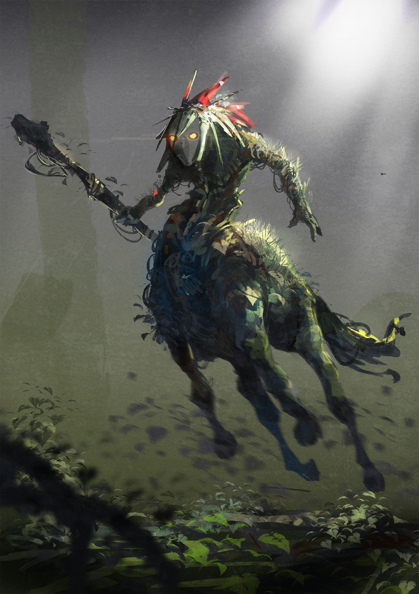
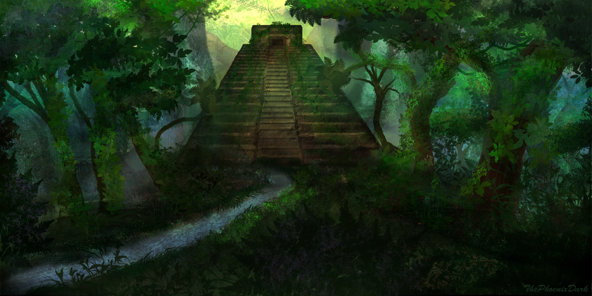

Travel
The students of the village would all head off on the same day, they would travel to seprate destinations and along the way change the adults traveling with them, at first the instructors of the village hall travled with them until they reached the town of Todtenwei. From there they would change guardians every town/village or city until their destinations. Between Todtenwei and Shomberg was the 2nd Regiment of Aldens camp, there where many Fighters who would join the training camps near by and once the remaineder of the group joined the main road south they lost the majority of the other students are the large Grafen military training camp. The group would further split at the Lobach river where the 3rd regiment of Alden where based, thoes heading north from here went to the capital Alden or Banderdam near the Mages academy. South would be heading Haisengen and then into Huonhia. The group would continue to split and have new students join all the way until Argavereri. Although the jorney to this point had been as expected where small monsters where driven off by the numbers or guardians the road to Banderdam traveled close to Huonhia and near an area often overrun by monsters. It was a rainforest where a few major rivers became one and followed into the sea, if it where not for the abundance of monsters it is likely this would be the location of some major cities.
Otto found himself walking next to a tall boy with short brown hair. He had the makings of a small mustashe on his upper lip, a refined pointed nose and a bit of achne around his cheeks.
"Names Leon, if you care to ask"
"Oh sorry, was I stareing?"
"Maybe a little, and we have been walking next to each for for 2 days now."
"Ah, I am sorry..."
"It's fine, you from far? you look tired, like you have been walking for awhile."
"Steinauhau"
"...Dosen't get much further then that in Alden, you ever been to Chingaling land before?"
"Chingaling? I am going to Tirnavalli Dukedom. Banderdam."
"Ah, sorry forgot my place, thats correct, how silly of me."
"What is Chingaling land?"
Leon stared at Otto. "You really don't know?"
"Woudln't of asked if I did."
"Suppose so, thought you were just a die hard Alden, well Chingaling was a country before, made up of people from Hathapatson to Dodgud. Alden and Huonhia split the country in two and claimed it for their own. Although the offical story is the people of Banderdam where demon worshipers so Alden occupied that area and Huonhia occupied the rest to protect the people from Alden. I suppose the truth depends on who you ask."
"So you must be local then?"
"Aha, yeah, born in Banderdam. Still live there now with my little sister and little brother."
"Erm your parents?"
"Monsters, Ethautenheim to Banderdam passes though the province of Bilkotgopia. Risky trip but pays well, work at Banderdam depends on the ports and the academy. Both do poorly in the winter."
"So you make this trip every year?"
"First time. I didn't dare go outside of when the students travel, less guards. Less of the ones that will help you anyway."
"Makes sense you can blend in easily becasue of your age, is it not a risk for you to tell me all this?"
"No, not particularly. It is no crime to travel at the same time, and traveling in numbers offers its own kind of protection."
"Well I am glad to have you with me, if we get lost you must know the area."
"That is true, but I am no fighter, I am training as a shop keeper, an apprentise. You know, if I get back."
"You'll make it back, I am sure. There are nobles kids in this group the guard's won't let the monsters near them."
"Yes, near them. But we are not them."
Otto pauses to think, he has a point but if we are just near by they will have to protect us even if they don't mean to.
Leon - "you're a mage with no wand? I think that is fine I have seen loads of mages without wands. If you really have to have a wand you can pick one up in Banderdam, being so close to the Mages collage means they often stock thoes kind of things."
Otto - "I still want to get one though"
Leon - "Yeah, looking at Pal's shop it seems many students think the same way, maybe it's the books they make you all read brainwashing you into buying wands."
Otto - "Aha, you might be right you know, we all have to read the same books to start with."
Otto - "There is alot of noise coming from thoes nobels up ahead. Didn't think they could get any louder."
Leon - "Drunk no doubt. Sounds like they are play fighting."
Otto and Leon turn to look at each other realising there is no way they are play fighting like little kids at a time like this.
Leon - "Into the northen tree's, if we are lucky we can go around."
Otto - "Won't there just be more monsters in the trees?"
Leon - "Chance of monsters is still lower then definatly monsters"
Otto - "But the guards." Before Otto can finish his sentance he see's a nobels guard cut down a 14 year old girl from neck though the body and out though the opposite side just above the hip. To far to hear what the guard said it looked as if they had turned on the other students. Following Leon, Otto ran as fast as he could until they where just beoynd the sounds of metal, shouts and screams.
Sitting inside of a ditch with hastily assembled twigs, leaves and dirt above their heads Otto was looking pale as Leon tried to slow his breathing.
Leon - "Welcome to Bilkotgopia."
Otto - "That some kind of joke?"
Leon - "Yeah, sorry. A dark one, close to the truth. In Bilkotgopia people go missing, it's always blamed on the monsters but strong monsters rarely travel accross into Alden."
Otto - "Truth and lies must be hard to tell appart here."
Leon - "Yeah, at least im upfront about which side I am on, I won't be turning against you. I just want to go home."
Otto - "Like you said you are not a fighter, but can you guide us to the river just past this... mess"
Leon - "Polite way to put it, but yes I can. After that we follow the river takes us to Banderdam."
Otto - "The river safe?"
Leon - "Ahum.. once we get out of Bilkotgopia it is."
Otto - "Let's move before we have time to take in what happend or worse it comes this way."
Leon nods and they crawl out and make their way though the forest towards the river, any sound of battle had died out they where too far from the road now to hear anything anyway. After 90 minutes of walking they where getting to where they wanted to be, Leon had been following signs and markings left behind by his people, signs to help them avoid the guards but Otto did not need to know that.
Leon - "Can you hear. Moaning?"
Otto - "Like an old man waking up."
Pushing appart the brances Leon peered forward and infrount of him on the ground was a dead student & the upper half of a dead man. The dead student was a first year, 14 years old like all the others the same age as Otto and Leon. She had light brown hair, slim body and face, with a small pointed nose. The half of the man that was left had blood seeping out of the cracks between his burnt skin, there was no hair on his body and his lower lip was completly removed along with his ears. He was currently eating the girls insides though her belly tearing at the flesh with his hands of bone and burnt rotten flesh, shoveling the meat into his mouth where most of it ended up back inside the girl though the gaps in his teeth.
Leon vomited, loudly. The monster screamed towards Leon and dragged it's self at supprsing speed towards him. Otto having seen Leon vomit had rushed over to help him, upon hearing the scream and seeing the moving cadaver chaseing them down he tried to push his mana though his body and out of his hand like he had with the Kappa. The rush felt easier this time with all the pratice he had had the ball of light shined, pale blue glow shone off the ground and trees before the ball spiraled forward blinding the monster for a moment giving Otto the chance to free Leon of his short sword, Otto ran towards the monster and kicked dirt up into its eyes and mouth, it flailed about and pushed the dirt from its eyes before showing his teeth in a growl. Using this time Otto ran in a circle to the side of the monster before turning on his heel, running stright for the monster holding the blade by his side and lunging it into the creatures head.
Otto wondered if there would be another level up or notification, but nothing happend. Letting go of the blade and turning to help Leon back up Otto heared a low growl and turned to see the monster was not dead and moving about with a sword sticking out from its head. Otto jumped around as the monster made swings from the ground before grabbing hold of Leons sword again and swining it smashing the monsters head to pieces over and over.
Leaving Leon against a tree to recover himself Otto starts to search the dead student, finding on her some coins, accessories and a few school supplies and food.
Otto - "Guess she wasen't a rich girl." Grabbing the ID card 'Lea Müller'. "You know her?"
Leon - "No, Alden name, not from here."
Otto - "Makes sense, can't carry her so I will take the ID card to the town and report shes dead or something. Let's get out of here."
Making their way back to the river Otto and Leon where on the otherside of the river to the main route. Since they had passed into Tirnavalli they could see a few boats moving down the river, and a few coming up. They manage to flag down some passing guards and explained their story to them, Otto gave over the students ID and told them where they could find the bodies. Otto and Leon then joined them in the boat on the way to Banderdam.
City of Banderdam
Arriving before the city of Banderdam where trails of students heading to the academy which lay near the city. The city itself was across a small stone bridge across the river Chitna which ended just short of the citys gate house where a wooden drawbridge made up for gap. There where square shaped towers all around the walls spaced appart, with a wooden building built atop. The gate house seem to of been rebuilt with diffrent color to it, the towers were circular with stone walls to the pointed rooves. There was a walled and rooved walkway between the two towers visable from the outside as it ran over the gate house giving the defenders room to drop things onto attacks. Even the older towers and walls had maticulations.
Banderdam

After getting out of the boat at the tempary station set up to deal with the large influx of people Leon and Otto made there way to the town by foot.
Once at the gate, guards where outside checking people coming into the city. With his ID card, letters of introduction to the magic academy and his age it was easy for Otto to pass though the gate. Leon livied there so he was able to pass though the smaller gate for the locals. Meeting up again inside Leon took Otto to the shoping distrct so he could drop off his package and Otto could go shopping for a wand.
The town inside was packed, the buildings clearly had been built with space between them to avoid fires but smaller tempary stuctures, carts and peaddlers had set up in thoes spaces selling and buying goods coming and going from the ports of Tirnadepal and Tirnavalli. There were ofcouse also goods being sold espcially this time of year for new and old students entering the academy.
Leon had taken Otto to a wand shop that had been there since before Banderdam was appart of Alden. Inside was clean, really clean. Not a single spec of dust was anywhere to be found, the wands were displayed around the shop in glass cases and up on the walls in glass cases. Each wand had a card next to it with its discription and price.

Soul bound wand
Skill: Third Eye.
Control minion +1.
Sense + 1
¤3,200,000
To put it bluntly, it was hard to miss. That wand stood out from the others, and not in a way that made him want to buy it. While thinking what kind of mad man would make such a thing let alone sell it his thoughts where intrupted.
"First time? I wouldn't reccomend that particular one"
"Uh yeah, it's my first time here. I won't be getting that one, what even is it?"
"Ah, not all items are made, some are dropped by monsters so it's hard to say. Let me help you out, this is my shop I can do at least that much, names Pal" He said his hand streched out.
True to his name he was a small man no more then 150cm, Otto reached out and shook his hand.
"So first tell me, do you know what field you would like to go into?"
"I am not too sure myself, I know I want to take the elements eletric & wind."
"Ah, a battle mage then?"
"Yes, sorry I should have specified."
"A mage who appologises, rare."
"Are other mages rude? Is it only thoes with bad parents who become mages?"
"Ahaha, might be so, we just say it is because they think they are gifted more then others. Makes them arogent, if you keep away from being arogent and stick to what you want, you might jsut accieve it. But don't speak like that around other mages, you won't make friends that way ahaha."
The shop keeper layed out 3 wands before Otto. "Nothing quite as fancy as some of the other wands, but at least useable by a beginer. Now I should explain the stats displayed are reflective of my measurements, thats to say how much it would increase by stats by just to give people a point of reference. The stats for when you hold it will be reflective of your own level."
"Oh, I did not know that.. Can I ask, what level are you?"
"33, I have spent more of my life as a shop keeper, item collector and appraiser. Combat magic is not my specality. I would of liked to of gotten a secound element but as you can see I did quite well enough without it." The old shop keeper smiled.
"I cannot deny that." looking at the wands they had the cards displaying: {+3 Magic.}, {Once per day skill: Detect magic (1).}, {Once per day skill: Small gust (1).} Each had their own uses, the first wand would give Otto +0 magic until he reached level 10 however, but every 1 magic at any level is always a boon. Detect magic would be great if he ever got to go on a mission in helping find anything magical, and without having to spend a spell point to learn it. Small gust was a wind element skill, a support skill, all it did was as it was named, a small gust of wind would pass by, maybe to pick up sand or drit and throw it into the targets eyes, or dry clothes. Even so to find an elemental item a beginer can use was rare.
"Ah you like that one? Hard to find an elemental wand that anyone can use, but since it is a first level spell it is something you can learn for free."
"Not free, costs a point."
"That, is true."
"How much are they?"
"Same price, ¤100,000"
"Less then I thought, more then I have."
"Only students from nobel houses pay with cash anyway, if you sign for something I can collect it later at the academy and they take it from your mission rewards, until they are paid back. Don't go crazy though they won't loan a first year more then ¤100,000."
"Good thing the prices match then."
"Don't look at me like that, I already discounted them so you could afford it if you like them, I won't force you, no doubt you will be coming back for many years."
"Ah, thank you" Otto bows deeply. "Could I buy the detect magic wand?"
"Feeling you might get lucky on a mission?"
"The opposite, feel like I will be unlucky and not spot something."
"It's yours, if I where you I'd keep it to yourself. Although it gives you access to the skill, still costs mana, you have to push your mana into the wand, though it and out the otherside. Normally I ask people not to test wands in here but in this case it won't do any harm so give it ago."
"If you are sure." Otto pushes his mana into the wand, it flows though like his arm is longer then normal feeling appart of him as far as the mana is conserned and out the otherside where upon Otto's eye sight is filled in color. Almost all objects in the shop glow different strange colors.
"Quite the show isan't it? Almost every item in here contains magic so, thats why."
"Why are there so many colors?"
"Different types of magic, like the manastone when you touch it turns purple-ish right?"
"Yeah"
"Well" taking a mana stone out from his desk and leaving it in the palm of his hand, the stone turns from its usual sea blue to dark forest green."Wood is my element."
Otto nods in understanding. After thanking the shop keeper again and leaving the shop with his new wand hidden away, heading to meet Leon at 'Főzelékfaló' a small cafe in the castle area, he ordered Főzelék as Leon had reccomended it. An intresting experience, tasted like thick vegtable stew although that discription does it little justice, so Otto became desprate to learn how to make it.
Főzelék

"Good isan't it?"
"Yeah, I don't really know how to describe it, can you make it?"
"Yeah I can, but not as well. If you want to learn my sister will be able to show you, I am sure you will get time to come visit us the minimum stay in the acadey is 2 years after all."
"I will, it's not like there are other towns near the academy, so I guess I will be coming often."
"Aha you're welcome to, but you studies might be a little more intense then you think."
After thanking Leon showing him where to get a good meal, and introducing him to a realiable shop keeper. Otto's jorney to the Academy was only a few short hours walk from Banderdam, although the other students often chose to spen their money on rented mounts, Otto could not ride, and was bankrupt.
Acadamey
The acadamey at first appeared to be a large and quite impressive but much smaller building than expected, situatied inside the rainforest Banderdam was famous for. With tall tress hiding the building from a clear view, as you got closer to the building you could see vines growuping up the side of the stone work, towers with no tops poked out from behind here and there, the place appeared to be in ruin in areas. Students could be seen on mounts, in carriages or on foot, unloading near the entrance. There where two large doors left wide open, standing near by where men dressed in an assortment of all different colors most in robes but a few in metal armor. Inside of the two doors where you would expect there to be stairs or a great hall was two giant stone spikes, they resembled claws and reached 30m from the ground to their top where they stopped just shy of the roof. Between these pillars was a mass of dizzing, swerlleling purple liquid, a purple Otto knew well, it was the same purple he saw the manastone turn back in the village hall.
Inside
Once Otto steped though the portal he could see streched out before him a long white bridge winged with more trees leading to a large palace, the door 30m tall appeared to be made of gold, with towers pointing up around the structure and beyond whos rooves where lined and eched in gold. Even the dome which sat above the maingate house appeared to be made of gold, the rooves a light blue pointed like castle from fairy tales, the walls pure white like marbel. The biggest change of all was that the rainforest was gone and replaced by towering mountins where the palace sat in the valley between.
Acadamey

Upon signing the scroll Otto felt warm and golden light bathed him. Then suddenly a message appeared infrount of his eyes. "Title: Back to School - Enter the academy, +1 Magic". Otto was elated, he had only just joined and already his magic was increaseing! Why was it called "Back to School?" if it is unlocked the first time you come? nevermind. He quickly loaded his stats.
Name: Otto.
Level: 8.
Primary Class: Mage.
Spells: 1.
Titles: 1.
Spell points: 7.
Stat points: 16.
Stats:
Strength: 0
Vitality: 0
Defence: 0
Magic: 1
Magic Defence: 0
Dexterity: 0
Sense: 1
Charisma: 2
"Room ****" A key is place in his hand as he is pulled back to reality. Slightly embrassed by his outbursts he quickly applogises
"I am use to it, all commoners are the same when they first arrive."
"Oh, I, sorry."
"It's fine go find your room, there should be books and uniforms inside best to learn the rules before you break them."
"Yes sir, thank you" Otto bows deeply before leaving to find his room.
Walking away from the main hall of the academy across other bridges and though streets, markets made of students and premitted merchants. They came with wagons, small shops in the bottom floor of housing the floor was layed in marble or stone. People wore either robes, with uniform markings but of differnt colors or bright colorful casual clothing. Otto was walking for while before realising he had surely come to the end of the large academy in this direction. The stone floor had turned to a dirt track, checking a nearby stone building for its housing number and checking it to his own he walked just a little further and saw the houses of stone had become wooden, although still nice. The rooves where pointed and curved at the end and looked like how he would imagine a house from Leika would be, trees stood around and he could hear birds singing. The houses in this area where built within or near trees and nature all around, the paths where grass which had been walked more often then the other areas. Wanting to look around some more Otto climbed one of the trees and looked into the distance, the forest was large, and in the distance he could see a very large structure where there was less trees, a huge wooden palace. There where sevral buildings inside and a small wall around the outside, unable to really be able to see any details from this distance he decided to drop down and keep on looking for his assigned room.
After awhile he soon found a pathed road again, but rarther then the neatly placed stones in a stright line he found randomly placed rocks between mud leading up the side of a cliff. The cliff had dewllings carved out of the rock, it was about 5 floors high. Looking back he could see ciffs on the opposing side, they had red painted pillars and a water fall falling between and atop them elven dewellings with forests around, looking between the two cliffs the opposing cliff was much more welcoming.
Walking to the door carved into the cliff Otto checked the sign carved into the rock beside the door. Yup, this was the building that matched his. There where a small set of stairs leading up to a large metal door placed inside of a natural looking cave entrance. The door was so large and heavy Otto doubted he could even open, that any man could open it. So he knocked and waited.
A head poped out from a floor level window. "Who is it?" a girls voice came from inside and the head looking out responded "Another of the dammed, one of us." with a big smile and the door creeked and a portion of it opned only large enough for a single body to pass though. "Welcome home brother."
Walking inside the main hall was much longer ande deeper then he thought back into the cliff, a good 1km or so. Not wanting to explore around this place too much he noted that there where large stone pillers with rounded hat-like tops. Below the 'hats' where holes and inside was a glowing ball, these pillars where lining the hall all the way down lighting it.
Pushing the door to his right, and looking inside was the boy from the window, two girls and another boy. Looking between them Otto decided he should introduce himself.
"I am Otto I am looking for my assigned room, the start matches this buildings so I thought it was in here."
Ralsan - "That'll be the case, 51? 5th floor, room 1. Ralsan is my name, this is Tisiel" A girl waved her hand, "Shrorlei Crerlass" the other girl waved quickly once with her hand, "finally we have Reingard". The final boy waved. "We are the next first years staying in this building also."
Otto - "I see, why are we the 'dammed'?"
Ralsan - "Ah that, to be placed all the way out here in this erm abode is because you must be poor, have no connections to anyone important and no outstanding tallent. Nothing personal just how thigh higher up's view us, not to say all the poor reside here just thoes with no history, backing, connections, long distance cousins in high places. Bascily people who cannot complain."
Otto - "When passing though the military camps I had thought they placed all children of any standing in the same accomadations."
Ralsan - "Well yes, but this is not a military camp, and if you take a closer look you will find they are not put into the same groups at least."
Otto - "Another might be disapointed, but I look forward to being away from the noise of the town during the night at least."
Ralsan - "Aha, honestly the rooms are not too bad go up and take a look, we will be here."
Otto - "Ah thank you, it has been a long way."
Otto headed up the stairs to the 5th floor, 1st room.
Inside there was a window, a desk & chair, a bed that would fit a man twice his size and a bin. Next to his feet this area was slightly lower down then the rest of the room, for about half a meter in in diamater, here was a small rack for his shoes and an old plant pot with an old umbrella inside.
After removing his shoes Otto walks over to the bed where 3 uniforms are layed out on the bed, a black robe, with a smart looking pair of black trousers and t-shirt (school and class emblems etc). The next uniform was just a 2nd pair of trouers and t-shirt without any markings on. The final uniform was much softer and thinner, with a note that read "SLEEP WEAR" ontop, maybe to save a first year of the embrassment of turning up to class in pajamas.
On the desk where some books, with a note that said "Read Chapter 1 of MM&M before first class." "Academy rules, regulations and assesment criteria", "Mages, Magic & Mana The basics" & "Exemplary mages: a history".
Leaving his belongings and deciding not to change into his new clothes yet Otto headed back downstairs to see if he could learn more about the housing.
Tisiel - "I'll show you about if you like, won't take too long not much out this way, then after why don't you go into town with me and buy me dinner as tanks" she teased with a sligh smile
Otto - "Be careful what you say, I might just take you up on that."
Tisiel - "Let's start with the tour, some of the halls are dark, but I don't bite hard."
Otto - "Pfft I'll keep you at a distance then."
Tisiel took him around, there were shared bath's on each floor. Students slept and cooked on floors 2 - 4. On the first floor was a libuary, it was mostly unused and dusty, the only books to be found here where either centries old or older students books left behind. Walking further down the main hall on the first floor they came to a large circular door. There where markings all around. There where 4 circles, 3 outter circles had these weird markings around them and the middle circle just had one syombol also nothing that Otto had seen before.
Otto - "And this is?"
Tisiel - "Sex dungon."
Otto - "Aha, you have a strange sense of humor."
Tisiel - "Fine you got me I have no idea what this is either, truth be told not sure anyone does. No one we asked know what it is."
Otto - "Bad decore"
Tisiel - "Aha, so how about that dinner?"
Otto - "Sounds good to me, I have no plans to cook tonight. Know any places?"
Tisiel - "Nowhere special but just past the Leika's area is the resturants that are cloest to here, they all seem fine to me."
Otto - "Lead the way, I'll pay."
Tisiel - "Ohhh have you not spent the loan yet?"
Otto - "Ah, I mean. It's not really my money. We were attacked on the way here."
Tisiel - "Do Alden gods not curse thoes who take from the dead?"
Otto - "Can't say I know of any curses but it is not like she will need it now."
Tisiel - "You are going to fit in here. Ahaha."
Otto and Tisiel went out for dinner in the main town, she showed him around, there was more to do closer to the academy, from pubs, sports, gambling, dueling, and many other entertainments. The noteable places around the main academy where the market areas, the main of which had a large church near by, the large arena, the academys main libuary and mission office.
After dinner they made their way back to the cliffside dorm. At the entrance to the door Tisiel spoke "I am home brother."
To Otto's supprise the door spoke back. "Welcome home sister."
Otto - "What was that?"
Tisiel - "Ah, the password. The ciffside dorm is old, no one has explained how it works only that it does."
Otto - "Well it is good to know how to get in, I was worried someone would always have to be inside."
Lessons
POV Otto Lesson on mages
"Now who can tell me what seperates a Mage does with their mana which seprates them from the Fighters?"
"They project their mana into the world around them to cause change"
"Good, you should all already know that having read chapter 1 of MM&M."
"Todays lesson is about getting you all understanding the directions you can take as a Mage, the roles can fill in Alden and beoynd and ofcourse where to put your points."
So since we are at that time combat mages, how to spend your points. Firstly Magic also affects the total amount of MP you have, so that is usually the main stat for Mages even if you plan to be a front line fighter, healer or non-combatant.
Now the other stat points there is no forumula for, so we have provided you a book containing what past mages have done and how it worked out for them you can either copy one of them or just learn from what they did and make your own path.
Finally your spell points. These can be tricky you don't want to be investing all your points into an explosion style magic and then find yourself fighting with a sword, or worse, trying to farm.
If there are any questions you will be seeing me once a day 4 days a week so please wait until you have read though "Exemplary mages: a history" before asking questions as you might find your answers in there.
The class shorly dismissed after, Otto went to the libuary along with many of the other students from his class and other first year classes. The main libuary was split into sections and first years who where not nobles of any kind could only access the first floor which soon became packed. Deciding he had the book he needed to read he would just go back to the cliffside.
In the libuary on the cliffside Otto got to reading the historys by the light given off by the large stone pillers. After reading though so many of the Mages from the past he soon found himself bored and looking for anything else to distract him. He started looking along the spines of the old books around the libuary; 'Fire Magic', 'Faming with mana - Pocotcotcan magic', 'Lusty Ma...', 'The Summoner: Morian Zenas'. "Oh he's in the historys book, wonder if it's different".
"I guess the people that wrote the historys just copied directly from these older books."
Looking though the books again Otto finds a book half on its side, 'Otto Magnus Of Might' curious, Otto opened the book to find the pages had been cut clearnly and inside the book was a black key, and the number 34, and below it some strange makings, markings similar to the door shown to him by Tisiel. The key looked to be similar to the one to his room.
This took no expert to figure out, no one had been into this libuary for a long time, the person who made that door must of lived in room 34 at sometime. If someone lives there now I will just have to be quick and use my wand of magic detection to see if there is anything there. Making his way to the room on the 3rd floor he pressed his ear up against it, no sound. Taking a deep breath Otto put the key into the door and turned it, click. He pushed the door open and sitting there looking back at him was Tisiel.
Tisiel - "Breaking into a ladies room without even knocking what kind of man are you?"
Otto - "Wait I can explain!"
Tisiel - "What you gonna tell me you found a book in the old libuary with strange syombols similar to the door?"
Otto - "Yes?"
Tisiel - "Ahahaha, it is my book, can't believe how quickly that worked you picked up the book with your own name on... Otto the mighty mage? really?"
Otto - "Hey it's not like the other mages had normal names and how did you know I would go to the old libuary and look though the books anyway?"
Tisiel - "Truthfully I didn't just took a chance to see if you where intrested in the door or knew anything about it, thats why I showed you around, no one else has taken any real intrest in it. So do you want to know whats behind the door?"
Otto - "Well, yeah"
Tisiel - "Well come in, and give me my key back. There was a book in that old libuary with strange signs on like the door that I found weeks before you arrival, I managed to descifer some of it and it took me to one of the ruins just north of here, looked like an old part of the academy that had fell into disuse or something happend to it. Anyway hidden inside was this ring."
Tisiel places a small dark grey ring down on the table, with the strange signs all over it glowly dimly red.
Otto - "You did all that already? What does the ring do?"
Tisiel - "Yes well, my specality is disyphering old texts and charms"
Otto - "How do you already have a specality..."
Tisiel - "My parents do this sort of thing, they desypher old langauges, magic texts, relics and items. Also.. I am level 12 so I already picked my element."
Otto - "Don't remeber reading about the desypher element but I am not going to lie that sounds cool"
Tisiel - "My element isan't called desypher, whatever I will just wait till you unlock your elements. The ring it's self though. Does nothing that I can figure out."
Otto - "So when you say help, do you want me to try to and find what the ring does? help you read the text?"
Tisiel - "Ah the help I need is well, do you have the skill Teather? It's just I can't learn it.."
Otto - "Used all your points?"
Tisiel nods in response. "But I also will need help going here" She holds out a baddly drawn map and points to a grave yard. "There is a chance we might be attacked so if I have you there... As long as I can outrun you they will be busy eating you while I get away. Deal?"
Otto - "I'll learn teather, and maybe some other spells to help us KILL our opponents not run away."
Tisiel - "I mean, as long as I get to live."
Otto - "When are we going?"
Titles - "I'll meet you out front in 5."
Otto - "... Yeah alright."
Later out infront of the cliffside.
Name: Otto.
Level: 8.
Primary Class: Mage.
Spells: 6.
Titles: 1.
Spell points: 2.
Stat points: 8.
Stats:
Strength: 0
Vitality: 0
Defence: 0
Magic: 10
Magic Defence: 1
Dexterity: 0
Sense: 1
Charisma: 2
Tisiel - "Whats that face?"
Otto - "Can't put any more points into magic. Why?
Tisiel - "You can't put more points in then the level you are, points for items and your titles go ontop of that."
Otto - "I see, then, I am not sure what other stats to get."
Tisiel - "Yeah, fighters have it easier, strength and either vitality or dexterity. For me I picked Magic and Sense, since I want to be an explorer."
Otto - "Makes sense, I should pick vitality, defence, magic defence, dexterity maybe charisma...."
Tisiel - "You are just naming all of them."
Otto - "Urgh I can't decide!"
Tisiel - "Lets just go, you can pick on the way."
Walking up north of the cliffs away from the academy the path soon becomes more dirt then stone, unused in so long. About 40 minutes later they arrive at the ruins of what could of been a small campus, it was hard to tell what it was with only the foundations of the buildings surviving.
Otto - "This where you found the ring?"
Tisiel - "Yeah, the grave yard was built outside of town though, I would of gone alone but, well you will see."
Ariving before the grave yard the pair stare blankly forward. 10 meter black metal spikes raised from the ground placed close to each other too small for a person to pass though, with an eareie ghost like gas passing between the spikes.
Otto - "Take it there is no gate?"
Tisiel - "Nope. This erm, wall is the problem I have."
Otto - "And how will teather solve your problems?"
Tisiel - "Well, according to this book the ring has to be placed on that erm alter? inside the grave yard to prove you belong to the socity."
Otto - "The alter is half a meter behind the bars, surely you can just place it on with your hand"
Tisiel - "I mean, if you want to put your hand into and though that gas, I won't stop you."
Otto - "... It's corrosive isan't it?"
Tisiel - "Very." Tisiel kicks a rock into the gas and it disappears before it can reach the otherside.
Otto - "Amazing, and the ring won't disolve?"
Tisiel - "If it does, it is the end of this mystory, but it shouldn't".
With a shake of his head Otto picks up the ring from Tisiel's hand and places it on his own. He then pushed his mana though the tip of his finger and it came out like a rope. He attached the ring to the end of the rope like teather, it stuck when he willed it to grab the ring. Pushing the teathed ring into the gas he was supprised when nothing happend, pushing it past the bars and out and placeing it on the alter.
Looking at each other, the bars shoot into the ground in an instant and the gas disapates. Behind is left grave stones, grass and a small stone mausoleum in the middle.
Otto - "Ladies first."
Tisiel - "Get moving you coward."
Otto - "No zombies, supprising."
Tisiel - "Don't jinx it."
Otto - "Grab the ring?"
Tisiel - "On the way out, same method or we die."
Otto - "Glad I asked..."
Opening the door and looking around inside, the pair see nothing, it's dark so they case mage light, mana gathers in the palm of their hands and gives off a small blue glow.
Otto - "This is the light from the cliffside."
Tisiel - "Yeah I mean, it's a common and useful spell."
Otto - "Ah"
Inside was three stone boxes, the length and width of a man. On top of each of the boxes carved from stone was the sculpture of two woman and a man.
Tisiel - "Sarcophagus, Alden nobels are burried like this even today."
Otto - "I did not know that. Our dead are burried in the village."
Tisiel - "We burn ours. Since you took money from a dead girl before, guess you won't mind breaking open some ones resting place?"
Otto - "I don't mind, but you make me sound like a bad guy..."
Tisiel just smiled as she crouched down opened the book and started reading and marking her fingers along the signs on the stone.
Pushing the stone lids to one side in the first Otto found a skeleton of a woman, proberly the woman who was carved ontop. Prying the rings from her fingers and the necklase from her finally he took the tiara from her head. Tisiel looked up at him as he removed items from a grave with a strange look.
Otto - "I remember this being your idea, you might need them"
Tisiel just rolled her eyes and went back to studying the signs around the sarcophaguses. In the second was the skeleton of a man, a wand, crown and one ring. The third contained another woman, jewlery and one coin. Making small pile of loot on the ground Otto turned to Tisiel.
Otto - "Learn anything?"
Tisiel - "I will have to keep coming here to read these, but the words I think I understand, he is a king, she was a queen and the secound woman was his daughter."
Otto - "They died at the same time?"
Tisiel - "No real evenidence of that. Let's see what you found."
Tisiel looked though the items before deciding she had no idea which where important and which where not.
Otto - "Look away for a moment."
Tisiel - "Why?"
Otto - "Secret."
Tisiel - "Fine, but no funny stuff."
Otto - "Like I would..."
Otto took out his wand and passed mana though it before placeing it back, he then moved the crown, wand and the kings ring to one side. The Queens tiara & ring. The daughters coin. "You can look again"
Tisiel - "I had to wait for you to make two piles?"
Otto - "The ones in this pile contain magic, these don't"
Tisiel - "I won't ask how but it would be amazing if they still cotain magic, It must of been centries since anyone came here. Let's get them all back I can use my skills to desypher these items and tell you what they all do."
Otto - "Sure, let's put them in your bag, keep them safe."
When the pair step outside the mausoleum some of the stone stachues carved on the graves or around the mausoleum fell appart. One manages to maintain some of its form and runs towards Otto and Tisiel who split and run, seeing the stone figure of a warrior from an age Otto did not know was running after Tisiel.
Running up to the golem Otto cast 'Strike' and the weak statue became enraged but the mana that stuck down from above him had almost tore his arm off. "Tisiel, Stike it." Tisiel turned and thew a ball of mana into it. One arm breaks off and Otto seeing manaball can be used as a weapon joins in and creates a ball of mana in the palm of his hand and slams it into the statue. Under the bombardment soon the statue fell appart with a creepy cry of anguish.
Otto - "They must of all been guardians, for them to be so weak. Some of them even broke appart when activated."
Tisiel - "More impressive that they even activated, but that could help us determin the age of this place."
Otto - "Been meaning to ask, if it has been here so long, don't you think someone else would of opened the door by now, or know what it was or what this graveyard is?"
Tisiel - "It's possible, but the fun is in the discovery. Now get the ring with theather and let's leave before something else comes to life."
Tisiel praticly locked herself in her room for a few days, only coming out to go to lessons and eat. Otto went to check on here everyday, it was amazing at the speed she desyphered at considering she had to make time for her normal studies.
Class - Combat
Teacher - "Todays lesson will be on comabt between mages, and a little on combat between mages and other classes. The upcoming duels have some of you excited, and this lesson is to help you prepare for the battle ahead. Now in real duels you will be premitted to use your own equipment but for this session you can only use the weapons provided to you, and the uniform you are wearing now. You may not enchant or enhance any of the equipment."
Body: Academy Robe (black). Magic: +1, Health + 10.
"Now the most obvious thing when thinking about duels between mages is that they use magical attacks. Convention gives that should you be up against a mage Magic Defence is the best option to counter that as it reduces the damage by more vitality increases your health. However you must consider the bigger picture, once you leave the academy not all of your oppoents will be mages and some will use physical attacks and the points you put into Magic Defence will do nothing to protect from that.
"The secound thing to think about during a duel although not as relivent during your lower levels is the amount of mana you and your oppoent have. If you run out of mana it is likely you will passout early on and be unable to fight."
"Finally is the element type. You might be an amazing fire-mage but if your opponet is using water, you are at a huge disadvantage so keep that in mind. If there are no further questions about the duels we will move onto charms and how to counter them."
The lesson continued as normal, reading though past mages, their feats and discoveries.
Name: Otto.
Level: 11.
Primary Class: Mage.
Element: Lightning.
Spells: 6.
Titles: 1.
Spell points: 5.
Stat points: 11.
Stats:
Strength: 0
Vitality: 0
Defence: 0
Magic: 13
Magic Defence: 1
Dexterity: 0
Sense: 1
Charisma: 2
Looking though the list of skills a lighting mage could learn Otto could not really decide which he wanted and which he should avoid. He narrowed it down to just a few he felt like he could use:
Chain Lightning,
Dazing Bolt,
Thunderstorm,
Shocking Touch,
Sparks,
Lightning Bolt,
Lightning Rune,
Lightning Cloak,
Thunderbolt,
Static Field,
Wall of lightning,
Lightning Storm,
Discharge,
Charged Charge.
He decided to pick up, lightning cloak, shocking touch, chain lighting, charged charge and wall of lightning.
Thinking on what the teacher had said, mages in the duels would be using magic attacks so it is potent to put points into magic defence. But Otto wanted to think about the future also, no not putting points into defence but strength. There was nothing in the rules to say he had to use magic, and his element lightning would travel easier though a metal blade then a wooden wand.
His hp at the moment was 210. The largest attack a level 10 student using a non elemental attack would be stike with no element would be about 100. Hoping even with the element added maybe he could take two hits. His plan would fall appart if the hit was a critical however.
Otto had made his preperations and headed to the arena where the duels would be held this week. Thoes not dueling would have to take notes and give feedback to thoes who where dueling.
Otto would be dueling on days 3 and 5. He spent the first day watching his class mates duel, most of the matches ended quite quickly with the students hp being reduced in 1 to 5 hits. There was ofcouse the odd duel where two defensive type mages met and each would exchange blows of around 5% of their total hp and mana comsumption became important.
Knowing his duels would not become a slogging match between two defensive mages Otto tried to concentrate on the matches between two offensive mages, or how to break though the defence of a defensive mage. What became very clear was that mages at this level where slow, not very powerful and had defences like paper.
On the secound day he managed to catch that some of his house mates where signed up also and went to see their matches. Tisiel's match ended in her loss, she only signed up for the expereince and would never be a dedicated combat mage. Shrorlei's match was a weird one, with some of her spells not activating and her oppoents sometimes fizziling out, the teachers reacted with no shock at all like it was expected but some of the students, like Otto could not understand. Reingard overwheled his oppoennt with a constant stream of manaballs but soon ran out of mana and passed out, he had won the match however. Ralsan did not fight today and Otto had missed his first match yestoday.
On the third day Otto equiped his formal outfit, mages robe and headed down to the area again. This time however instead of watching the matches he made his way into the armory beneath the area. Inside where many students picking out weapons and signing in that they where present. Otto signed next to his name picked up a completly metal spear and sat down to wait. He got a few weird looks, some of the students even pittied him thinking he must of thought the metal spear was some kind of magic staff, but non of them thought to correct him.
Soon enough Otto's name was called, along with another boys Daniel. He was tall, a little chubby, with hair so short you could see his scalp like it had recently been shaved off and grown back. He had a friendly face however, squinting eyes that looked like they where smileing. He had a 20cm wand in his hand made of wood, the wood was much darker then the wand Otto had in his room. Thinking there is not much to learn from his oppnent and he would just stick to his plan he greeted Daniel wiht a smile and a bow. Daniel bowed back and the pair made their way into the area.
It was hot, too hot. The moment they steped out Otto could feel his face starting to sweat, the crowd where shouting on their friends and now being down in the middle of it all he could hear just how loud the curved walls of the area made the crowd. Otto opend with castin lightning cloak, lightning covered his entire robe but would only react on contact so it was of no threat to Daniel with that the match began. Daniel opened with a manaball which gathered in the palm of his hand and looked to be made of mud and earth, before he had much time to debate Daniel's element it was flug towards him at great speed. Casting wall of lightning infrount of him, lightning bolts stuck up from the ground 1m in height. Otto ducked and the ball his the lighting bolts and broke appart, the pieces of the ball exploded out in all directions some of them hitting into Ottos arm and side. He had lost alot of mana and some hp in that exchange and Daniel had come out ontop. Gripping his spear and casting Charged Charge his body felt lighting crawling all over his skin his muscles twitched from the stimulus and he shot foward and great speed. Daniel taken back by this sudden change summoned an earthen 1m wall infrount of himself, which Otto just jumped over easily with his increased speed. He lunged the spear into Daniel's center and cast Shocking touch, the spell worked by releasing lighting-mana from his fingers but as he had hoped the lighting ran the length of the spear and entered Daniel's body. The last thing Otto remebered was the great pain in his feet and legs as a 1m earthen spike shot out of the ground and sent him flying. The match was over.
Waking in a bed unfamilia to him with bright white light shining into his eyes, Otto reached his hand to cover his face from the brightness and looked around. In a bed to the right of him sitting up eating red grapes was Daniel. Turning towards Otto and smiling.
Daniel - "Congradulations on your win, I'm Daniel the first earth mage to lose to a lightning mage this year."
Feeling awkuard Otto responded "Sorry about that, but how is it my win if I ended up in here also?"
Daniel - "First to bring the oppoents health to 10 points wins, after you lowered my health to 10 points so the spell that activated after although lowering your health to 10 points also means I came secound."
Otto - "Oh I see, sorry again. Can I ask, why does our health stop at 10 points?"
Daniel - "Don't be sorry your prize is to do that again, you where my final match and I don't plan on going though that pain again any time soon. You don't know? Teacher should of told you, during a duel your health stops at 10 points so no one dies. If you want to know more then that you'll have to ask professor Farald he's an expert on it."
Otto - "Thank you, I think I must of missed when we were taught that. How did your first match go?"
Daniel - "Easy win, guess that's why I was so confident going in. This will teach me."
Otto soon left the infimary and went back to his room to rest after being granted leave for the afternoon. The show he put on today proberly caught some attention using a spear to get shocking touch's range to increase. Any mage in the know however would of noticed that shocking touch alone would never of K.O. Daniel in one hit but all he could do was hope non of the students worked out his plan. Trying to formulate a new plan Otto went top side, on the top of the cliff was an area set out for training, or at least that what it had become. Otto was trying to push his lighting-mana into the spear and throw it, the only trouble was, the lighting-mana he wrapped around the spear didn't travel with the spear, the spear flew and the lighting mana just disipated. "There must of been a skill for this I don't have yet or missed.. I am out of spell points anyway."
Ralsan - "If you have a spare spell point and force it enough you can learn a skill that way. Would look cool to see a lighting spear."
Otto - "Hey, yeah it would of but I don't have any skill points left."
Ralsan - "Please tell me you at least got discharge?"
Otto - "No, I thought since it drains so much mana I would just pass out, so I didn't get it."
Ralsan - "From what I saw you passed out anyway. I just came up to tell you its dinner, we are eating togeather while we give each other advice."
Otto - "Ah, i'll be down shortly, thank you."
The fourth day.
Lightning Spear,
Imbune Lighting,
Lightning travel (Object),
Lightning travel (Mana).
Chain lightning - Shocks target and travels to (1) other target(s) within (1)m.
The fifth day.
Otto again entered the armory and debated on which weapon to pick, this time the other students in the armoy where curious about what he would do. Trying to ignore their stares by telling himself this is just 5 minutes of fame they will all forget about me soon enough. Otto picked up a warhammer, the thing was easily 30kg, no mage in the right mind would use such a weapon, no normal mage could even wield such a thing. Smiling to himself internally with and idea of how to act in this battle Otto took his place and waited.
"Otto & Kaja make your war to the arena."
Kajs was a little shorter then Otto, dark blonde hair and dark blue eyes, but the most noticable thing about her was a large wooden sheild in her left hand.
Otto - "How did you know you would be fighting me?"
Kaja - "I didn't just figured some other punk would try it, if I don't need it I can drop it if I do need I got it. Although that is not a spear." she pointed to the warhammer balanced on Otto's sholder.
Otto - "No, no it is not" he replied with a smile.
They made their way into the arena, bowed to each other and the match started. Kaja kept her wand hidden behind the shield and when she casted fireballs she moved the shield and released them at Otto who was trying his best to avoid them enterely. Taunting him as he danced. "You'll have to fight back pretty boy or I'll burn your hair off."
"Stop shotting me and I might" Otto relied moving aside of yet antoher fireball, while he was saving mana his stamnia would not last much longer he would start to become slow. Using Charged charge Otto dashed across the field and slamed his warhammer into Kaja's sheild, although it helped she struggled under the force and fell down. The shield had reduced the attack from 72% of her hp to just damaging 34%, it would take 3 attacks to take her down instead of 2. While down but not out, Kaja shot a fireball into Ottos stomach. -25% health. Good thing she keeps using fireball and nothing else, Otto moved to swing his warhammer again, this time without charged charge he resorted to using shocking touch but he only managed 28% of her health. Kaja struck back with a flamethrower spell putting Ottos clothes on fire, dropping and rolling away Otto lost his warhammer on the ground to put out the fire, -25% again.
Kaja - "What will you do now, without your toy? Time to become ash and smoke." Kaja raised her wand and the ground started to burn, Ottos feet strated to sweat, she was going to set him on fire from below this time. Too far away to hit her with anything useful all my spells only have 1m range. Chainlightning. Otto stuck the warhammer with chainlightning, the lightning hit the warhammer and bounced into Kaja -14%, the sudden shock and pain caused her to lose concentration and Otto took his chance and dashed for her.
Grabbing the warhammer he felt a sudden burning sessions in his side, -28%. She hit me with another one of thoes damnned fireballs. Screaming as he turned to use charged charge he accelerated, Kaja seeing this coming enveloped herself in fire-mana as he slamed his warhammer down into her shield, the fire mana had increased her defences 22% dammage. Thinking to himself if she was level 14 or less she would be dead. -35%. The fire cloak had stuck him as he came into melee rang, His health had reached the final 10 first, his blow had landed moments after leaving her with 2% hp. He had lost.
Reflecting on the battle, she must of been at least level 15, would of put her hp at 250 unless she put any points into vitality in which case she might be a lower level. Unable to do anything about it now the reflection was a form of self improvement rarther then an excuse for his loss, he would reflect on what happend, what he should of done and grow from this.
Bowing to Kaja, and her to him they left the arena and returned their weapons, it was nice to not have been knocked out this time. walking back to watch the rest of the duels though the day he got an unexpected visit from his teacher.
Lubin - "Rarther intresting approach, Strength in a match between mages."
Otto - "Did not think that would slip by you, do you disapprove?"
Lubin - "No not really, I trust you have read though the historys at least once? You are not the first mage to try strength and magic. I'm sure you won't be the last but it is very uncommon during peace times."
Otto - "Why is it uncommon during times of peace?"
Lubin - "The method of strength and magic is one usually only taken after level 50, to do it so early would only happen when you have many types of enimies, a hard road before level 50 mind you. I just came to give some advice, Historys: Battle-mages, Fighter-Mage, Inquisitor, Mage-Tanks are all a good place to start. There are more however, slightly more unsual methods, in the main libuary there is also records from a necomancer and a deathknight. Not usually given out to first year students, but usual first year students dont put points into strength."
Otto - "Thank you sir, but why would you go out of your way to do all this forme?"
Lubin - "Nothing personal, it's just my job, guide students to a path that they want to take, once they find their path help them traverse it. Don't mitsake this for me picking favrouts I am just doing what is expected of me. You may take your leave for the day if you want, I believe you have some reading to do."
Otto - "Yes sir, thank you sir" And with that Otto went to the libuary while the other first year students where in the arena to read up on the necromancer and the deathknight.
Having gotten Tisiel's letter Otto was standing infrount of the giant circular door waiting for her. Tisiel soon arrived looking like she had stayed up all night again.
Otto - "So you made a big break though?"
Tisiel - "Yes, I am sure we can open this door"
Otto - "How?"
Tisiel - "You just have to take this ring, get down on one knee and ask me to marry you. Simple right?"
Otto - "The door shall forever remain a mystory, no one will ever know what was behind it. Shame really."
Tisiel - puffing out her cheeks "It was just a joke, but seriosuly though we can open the door, we just have to read this passage togeather outloud and combine the wand with the ring."
Otto - "Alright let's get this over with, these better not be wedding vows."
Tisiel - "It was a joke.."
Togeather the pair read off a translated version of the passage from the book, the sounds dont fit quite togeather as they should but still the doors syombols glow red like the ring. As instructed Otto places the wand though the ring Tisiel is holding and they both pass mana though, sure enogh the circles begang to rotate. Soon the door seem to disappear like it was never there, confused the pair just look at each other.
Otto - "Hold up, I had to put my wand in your ring? I bet this is a sex dungon after all."
Tisiel - "Ohh, how about a wager. If its a sex dungon I will buy you dinner. If not, you buy you dinner."
Otto - "Aha you are on, now get your ass in the creepy sex dungon."
Tisiel - "Good thing no one else is around.."
Stepping inside they find stairs leading down into darkness, lighting up mana balls to float around them they make their way down to the bottom. At the bottom was a small dark room, it contained a desk book shelves and a chest of draws. There were lots of books, a large blue orb giving off a little light and skulls. Many, many skulls, they lined the book shelves with books leaning against them, they where a few on the desk, the draws in the chess where full of skulls.
Room

Otto - "You owe me dinner."
Tisiel - ".. This is NOT a sex dungon!"
Otto - "I dunno, mood lighting, sexy skulls"
Tisiel - "Phahaha, you freak. Get looking for loot."
Otto - "Yeah alright"
While Tisiel was looking though the books Otto whiped out his wand and looked for magic items. Most of the objects in the room remaind as they where, except from the orb the only items in the room which glowed where the qill left on the table, a wizards hat screwed up in a corner, a pendent ontop of the chess of draws and one of the skulls on the book shelf. Taking these items and placing them on the desk togeather when Tisiel had finished looking though the books and taking the ones she likes in a small pile on the desk they decided to go though what they had found.
Otto - "Think you can work out what these items do?"
Tisiel - "Well yeah, given time I am sure I can do a few of them, lets take these things out of here and back to my room we can go over what we have."
Otto - "Yeah I don't want to spend too long down here."
Otto - "lets go over what we have, and how do we split it up?"
Tisiel - "Ah, this is where I betray you, and steal all the loot for myself. Using the ill gotten goods I get propelled forward and become a huge master of the realm"
Otto - "What are the chances that any of this stuff is even useful to you? And like you'd betray me, you'd have no one to join you in your sex dungon then."
Tisiel - "IT IS NOT A SEX DUNGON! .... I am not sure what it is yet, looked like a study, private place to work, but why? I am sure I will get to the bottom of though though my studies. Anyway at this level it's less about finding something helpbut but building myself around what we have found."
Otto - "I am sure you will find out what was going on down there and drag me back in soon, honestly if you really wanted the items I would rarther have a trust worthy partner then one or two magic items I am not sure I can even use."
Tisiel - "Ohh, you trust me? That's new. I'll tell you what they do, well what I know then we take turns taking one each?"
Otto - "Mmm that's more then fair, honestly the exams coming up and arena matches I am sure I will need someone to watch my back."
Tisiel - "Ahhh stop talking you're making things awkuard."
Tisiel - "Starting with the wand and ring that opened the door. I am unsure what else they can do but they seem to be syombols of the people that made the door, graveyard and lived in the ruined academy. I'd like to keep studying them..."
Otto - "Taking two already? It's fine, we might need them in the future I won't give you a hard time you can keep them without it counting as one of yours."
Tisiel nod's and continues - "Now the Kings crown. It's the Crown of the Dammed. A rare piece, increases your magic and decreases your charisma, aswell as increasing the number of undead you can control."
Otto - "Creepy."
Tisiel - "Yes well, perfect for a necromancer or a mage who just does not care for their appearance and others."
Otto - "Ah, so it's perfect for you?"
Tisiel - "Tsst, I acctually do want it, it is intresting but I do care how I look thank you very much."
Otto - "Mmm sorry that was too far, I think you and Reingard will make a beautiful couple."
Tisiel - "I.. What? Why do you say that!?"
Otto - "Knew it. Now keep going before he gets the wrong idea about why I keep coming into your room alone with you."
Tisiel - "Tsst, you. The kings ring, is an basic undead control ring increaseing your control over the undead."
Otto - "Yours."
Tisiel - "Thank you. The queens tiara, it's called Queen's pawn, it comes with the skill animate stone. That explains the things that attacked us in the grave yard."
Tisiel - "Her ring, it gives a little strength to the wearer."
Tisiel - "Finally the daughters coin, who though more research I am not sure is there daughter at all. I am not even sure if they are related and this coin is a mystory to me, can't find any references to coins like it, and I cannot tell what kind of magic it cointains."
Otto - "Hmmm kind of junky items then? The tiara sounds expensive maybe it would be better to sell it?"
Tisiel - "Yeah I don't feel like you are wrong, its so niche. It's not like we have a stone mason to make use humanoid statue's. Anyway the stuff from the room. The pendent increase your magic much more then normal items but reduces your strength it's really popular amoung mages if you take it with the queens ring there will be no negative effects, can't have you been to small."
Otto - "Aha, I'll take them even if you are trying to get rid of that ring."
Tisiel - "Hehe you saw though that. Next is the skull-"
Otto - "Yours."
Tisiel - "It might be amazing."
Otto - "... No one is going to talk to me if I walk around with a skull."
Tisiel - "Why do you care if people talk to you?"
Otto - "Do you want the skull or not?"
Tisiel - "Fine, I wanted it anyway. Now the Hat increases your magic. It's acctually pretty good."
Otto - "And the quill?"
Tisiel - "Come on you don't want the quill."
Otto - "Yeah, I want the hat but what does the quill do."
Tisiel - "Ah, it helps your chances when eteching encantments on items"
Otto - "I get the feeling you came out of this better then me"
Tisiel - "There is still the coin and tiara."
Otto - "I'll take the coin, you can sell the tiara and buy me dinner, I'm sure I was right about that sex dungon."
Tisiel - "I will stab you to death with this quill if you menction that again."
Otto - "Hehe, fine let's go eat. I would like to know what was going on down there though."
Dinner
Otto - "Tisiel it had sliped my mind, but I took notes on the history of these two mages from the main libuary, I think you might find them more useful then me reflecting on whats happened."
Tisiel - "On whats happened?" Looking at the titles and quickly skimming the contense of the book. "You know, you might be right, this looks exsactly like the kind of inspireation I need for myself, mind if I copy this?"
Otto - "Go ahead, but don't summon skeletons and leave them in my room."
Tisiel - "Ah that was my whole plan!"
Name: Otto.
Head: Witch's Hat. Magic: +3.
Body: Academy Robe (black). Magic: +1, Health + 10.
Hands:
Feet:
Acc1: Pendent of Medium Magic. Magic +2 , Strength -1.
Acc2: Ring of Little Strength. Strength +1
Acc3:
Acc4:
Primary: Warhammer. Strength +1.
Secondary: Wand. Skill: Detect Magic 1 per day.
Missions
Sign up
It was finally mission day, after so long of waiting first years where finally in a posistion to leave the safety of the academy and go into the world, both inside of the academy grounds which seem vast with many areas totally unexplored and the world beyond the portal. It was also a good way to make money.
The missions where not the adventure thill ride Otto had expected, one of the mission slips said "Lightning mage wanted: To put manaballs around bathhouse to keep mosquitoes away." He had ended up taking this one, he had no idea what mosquitoes where but at least he would be helping someone. Tisiel's mission of going though old junk and decrypting them seemed to suit her, Reingard had even joined her as a bodyguard. Otto left though the portal back to Banderdam, this mission would take him though Chihal and down to Savigal a port town on the border with Huonhia. Since his ID now had him marked as a combat mage he was able to join a merchant group heading to Chihal.
Sitting in the back of a wagon the trip was mostly uneventful, Chihal sat between 3 ports so natureally had a large market place. There were no walls, no castle and seemed very peaceful, it was far from any border conflict with the monsters down south even if Huonhia ever tried to invade it was unlikly they would push this far to assult Chihal it could not serve any strategic importance. The town it's self was rarther small, there were few farms outside tended by mages who had retired from the academy and inside the town was a few dwellings, tavern, inn and the market place. It took 9 hours to arrive they had stopped for lunch but the time was still very good. It would take a further 6 hours at least to reach Savigal so Otto decided to book a room at the inn then have a look around the market place.
The market place was selling all kind of oddities with merchants traveling between ports and cities stopping off here they opened shop from their wagons, wands, weapons, armor, skeletons, mana stone, mounts, there was even one merchant selling long metal tubes with a wooden handle, he claimed they where wands of explosion magic but said he had no idea how they worked.
Setting off from Chihal the weather was colder then it was yestoday. Without the wagon to sit in today would leave him tired. Wrapping the robe around himself to keep the wind off he walked along the path with the rainforest on either side. There were a few others travling also but most of the merchants and others where heading to Banderdam or the two larger ports in the area. Savigal would be a small port it seems. After walking for 3 hours Otto needed to pee, walking into the rainforest just off the path to do it in peace.
While relaving himself he soon noticed hanging above him from the tree was a deadman. Pulling his robe back around himself and grabbing his warhammer Otto span around looking about. Nothing. Closer inspection would show he had been dead awhile, his flesh was mostly gone, the eyes removed it seemed the animals had long been at his body, the smell was bad but thats not what had Otto's attention. Tangled in the vines the man was wearing strange clothes, even strange for a nobel, a blue jacket with gold trim, but it had no hood and didnt feel like a woolen robe. The cuffs and sholders where not sewn into the sleaves but rarther left to hand over the top. The mans face was strange too, but hard to judge a man whos been picked at by the birds. Looking down on the ground some of the mans belongings where here, strange purple coins, a wand, looked like the merchants explosion wands back in Chihal, if it was though it was faulty as no explosion had happend around here. There where papers and food. Otto decided to move the items into his bag as the mans bag was torn.
"I'll take them back to the academy with me maybe Tisiel can make sense of these things." setting back on the path to Savigal Otto made his way for another hour before coming across another body, a merchant he had seen earlier that day. This body was fresh, still bleeding out but long dead. He was not a well to do merchant, he had no wagon or body guards but was travling with others. Seems they had no robbed him as his trinkets and food lay scattered about the path and into the forest.
Getting closer to the body Otto could see the dead body of a large wolf in the direction the blood went into the forest, the wolf was almost 2 meters tall when stood on all fours and over 3 meters long. The problem was there was only one wolf body, even Otto knew wolves don't attack alone normally. The other merchants where no where to be seen, prehaps the pack is still chasing them? They might double back for the kill they got, I should get away from here.
I left at a brisk pace down the road, since the merchants didn't come back towards me I must assume they made their way down here so I should keep a look out. Soon enough I came across the other merchants, arranged around the wagon with small gaps in their line. Unable to see into the forest the only monsters I could make out where two large wolves similar size to the one back with the dead merchant and one smaller about half their size cloestest to my position. Unsure of what to do for awhile I just stayed still, soon enough a large man in the group shouted towards me. "If you stand alone they will target you and take you out, run quick and get into the group." at his shout I ran, I ran as fast as I could, not having invested many points into dexterity it was not easy as I used the strength I had invested into my stats to pump my legs as hard as I could. Soon enough the wolves noticed me, the small one charged towards me as the merchant's and body guards intercepted the larger wolves taking this oppertunity to attack them. Seeing the wolf run towards me with its fangs out scared me. I gripped tight around the warhammer and launched byself with Charged Charge, my legs twitched with lighting, my speed shot up over that 1 meter gap. Launching myself warhammer first into the beast it hit the ground with a whimper, blood and fangs splattered over the floor. The hammer has caused more damage then the lighting. A normal baby wolf would of had it's whole head caved in, my attack did 72%. The large man who had called me over stabbed a spear into the wolf as it tried to get back up. It would never get back up.
He ran to help with the two larger wolves, I tried to stike one of them with a lightning strike, 0.05% damage. One of the largers wolves was slayn the other ran bleeding back into the forest. I was later told by Giselher the large body guard who speared the smaller wolf that the large wolves where between level 20 and 29. They had high magic defences and often made pray of magical or weak humans. I don't know what the large wolf dropped by the small wolf dropped a pair of gloves, Giselher gave them to me saying I did most of the damage anyway and he was supprised a mage would have so much strength. I gladdly accepted it would be my first monster drop. To get to Savigal I decided to join their group just encase the last wolf made a return.
Hands:Mutt's Mits Magic defence +1.
Savigal
Savigal port was so small it did not even have a market worth a menction, just ships and merchants setting up on wooden crates or out the back of the wagons, no real stalls. The port had 2 ships in dock, a small cog with one sail. The other was a Hatalia ship, a balinger with a single mast with many holes for oars although they where closed right now, I could only tell it was from Hatalia because of the flag flown from the rear of the ship, it was unlikely they built the ship themselves, Hatalia's navy might be as large as Aldens but they where a much larger country. Hatalian's broguht their ships from Chalbia.
I made my way though the small market place buying fruits and rations for the trip back, I could make the trip in 2 days and rest at a town each night so I did not need much, but when travling and with the funds to do so it' nice to try new things. After shopping I went to the office building, normally a small town like this would use the village hall for any government administation, but since Savigal was a port town capable of being used during times of war it had a government office building here. All I had to do was take my ID and mission slip in and in return they informed the bathhouse. While I waited for the sun go to down since the mission was to take place just after the sun sets I rested in the rarther large taven.
The bath houses
Just after the sun set I made my way to the bath house, waiting for me was an elderly woman, haunched over a small cane in her hand she smiled and waved towards me. I waved back, my robe must of given me away.
"Must be the boy they sent from the academy, first year am I right?"
"Yes but how did you know?"
"You robe, pure black. They will give you a new one when you get back, thing is it embrasses the academy if a mage with colors dies on their first mission."
"Oh I see.."
"Don't worry the only danger to your mission is making it all the way out here, the task of putting up mana-balls should be simple really. Follow me I just need you to put lightning-mana balls inside these stone totems. Should keep thoes damnned things away. What you doing back there don't be shy the bathhouse is empty tonight."
"Ah yes sorry, the sign said ladies so.."
"It's empty get in here."
"Yes Ma`am."
The mission was really short, after putting a few lighting mana balls and chatting to the bathhouse lady for awhile I found out the mana-balls had gone out because the mana stones keeping them active had run out. I also learned mosquitoes are small bugs that bite you, and it is really itchy! The cure however is a 40 degree bath ... This has to be the best perk of the job.
While relaxing in the bath, I could feel the warmth move into my toes, it felt like the warmth was moving into my bones, my muscles relaxed and time just seem to pass by...
"AHHHHHHHHH"
"Huh?" I jumped up and grabbed for my warhammer, the cold soon gripped by body after leaving the warm waters. As I looked towards the scream I noticed it was a girl wrapped in a towel, soon her mother came to her and I remebered I was naked.
"Ah you're still in here? I didn't think you'd still be in here oh deary me put a towel around yourself gave the girl a fight" the bathouse woman seemed to be enjoying the mischief she had made. Is she so bored as to set me up like this!?
After appologising to the girl and her mother and the many other women on the way out I made my way over to the tarvern. Tonight I would drown that embrassment in drink.
side quest
Just as I was getting my first drink the bar tender handed me a note, on the front was my name in scribbled hand writing. Inside was a baddly drawn map with a line from the tavern into the nearby forest with a large X on it. "What the hell is this?" I asked no one inparticular.
"Can't say I understand it, but looked like a map to me."
"Mmm yeah thanks, who gave it to you?"
"Bathous.."
"Yeah I'm not going."
"Isan't she your employeer?"
"...It's almost like you don't want my money.. Fine I'm going.."
"Take care of yourself, no doubt she's up to no good."
"...Yeah"
Making my way back into the village, past the bathhouse and up into the forest, not too far into the forest was a small house, walking up the stairs and knocking on the small door I wanted, soon enough the bathouse women opned the door. "Ah good you got my message"
"Bearly it looked like a childs drawing."
"Well it is, Mia here drew it."
It was the girl from the bathouse, I could not be more embrassed. "Ah sorry about earlier." I touched the back of my head and tried to smile. Mia just looked away with a red face, seems she dose not like me. I wouldn't like me either..
"So, why did you call me out here?"
"Ah well I know it's not part of the request I sent to the academy, but would you light a mana-ball here also? Just to help out an old women, no one wants to be bitten by thoes nasty thing."
"Yeah alright." I lit up the stone totem from the inside.
"Mia is my grandaughter. Not that you asked, but she is a Mage and is going to the academy next year."
"I'm sure she will enjoy it there and learn much, just write ahead in advance and ask not to be put into the cliffside."
"Well ofcouse everyone knows that."
My eyebrow twitched at the comment..
"What I really was hoping was that you could talk to Mia and tell her about the academy it's been so long since I went I am sure it is nothing like it was before."
"Ah okay, I guess I can, as a way to say sorry..."
"That's the spirit, I'll get you two some drinks and food, I hope you like mangos."
This is going to be so awkuard. In the end Mia was easy to talk to, since we were almost the same age and I had only just joined the academy and she was so intrested in it we had alot to talk about. I ended up sleeping there after Mia went home, at least I saved the cost of a room, I would head back early in the morning and try to make it to Chihal and look around the market by the afternoon.
I ended up having to give Mia my address so she could send me mail if she had more questions about the academy, when they found out I was staying in the cliffside they pitied me abit, but if I'm honest since day one I have enjoyed staying there. I waved good bye and set off along the path to Tisiel.
On the jorney back I saw more guards then usual, maybe because of yestodays attack. I managed to make it back to the market by just after midday I really made good timing. In the market I managed to find a book with strange markings on it, the same strange markings I saw with Tisiel on the door in the cliffside. I knew I had to buy it, the merchant only had odd and unique items which all seem to be of little or no use other then being odd. In the end I had managed to buy the book in exchange some of the coins I had found on the forigner, he seemed much more intrested in thoes then real money.
Staying the night again, and heading to Banderdam in the morning was my plan. After I was finished at the market however I was approached by Giselher who was escorting a merchant group asking if I would travel with them to Banderdam tonight. While it was risky to travel at night, I would be with the other guards and make some more money. I took them up on the offer.
That night I walked next to the wagon along with Giselher, he told he had been working as a guard for hire for over 10 years since he left the military academy. Since the attack yestoday the merchants would be hireing more but the chance of attack was less, usually when one strong monster is taken down in an area it takes awhile before another appears. As if to prove him wrong only 15 minutes after he said it we came across some monsters.
Skeletons. This better not be Tisiel's doing was all I could think. The battle was not to my advantage initially, skeletons had a slight natural resistance for lightning. I soon found however they where very weak to my warhammer, I soon gave up on using spells on the skeletons directly and opted to save my mana to charge, and shock them to create an opening.
55% dammage per swing, swing, shock, swing. Repeating this over and over until we had killed 50 skeletons between us. "What level are they Giselher?"
"Around level 10, skeletons are quite common here with the jungle to the south and academy to the north. These are mage skeletons they came from the north and they are really weak. It's their numbers that will take you down."
"Anything good drop?"
"Nah skeletons at level 10, you'll get a few bones.. if you are into that kind of thing."
"Well, I have a friend who might be intrested..."
"Forgot you are from the academy for a moment, take them they are worthless really and I feel wrong being around them."
"Ah yes thank you, honestly I can't say I want to hold onto them for too long."
After we made it to Banderdam I thanked Giselher, got paid and headed to the shop Leon worked at. Just as he said he was now an apprentice shop keeper, he was behind a counter thinking about something hard while looking down at some papers and a large book. I walked up to him and knocked on the desk "Shouldn't the shop keeper greet the costomers?"
"I am so sorry si...Hey you came!" Leon wore a bright smile but the frown lines still remained on his forehead, whatever was troubling him had not left his mind.
"You working hard? You seem a little stressed."
"Ahaha no no, just learning to keep the books all this maths hurts my brain. I am enjoying it really its a good challenge. So they finally let you out of the academy? Why don't you stay for dinner? My sister is a really good cook!"
"I'll take you up on that, but I'll buy the ingredidents I just got paid and you have work to do. I'll come back with supplies and you can show me the way to your house."
"Ah really? That sounds like a plan!"
As agreed I went shopping for fresh vegtables and meat, I did just get paid and if I took any money back to the academy with me they would take it as I owed them a debt. It's not like I could spend all of the money though, they sent me on a mission and knew how much I would be paid for that at least. Arriving back at the shop I had left a over an hour ago Leon was still inside, it seemed that clocking off even at after sundown was a favour to the shop keeper he owed. We walked and talked as we made our way to Leons place, while it was inside the walls of Banderdam it was not near the market but across the otherside of town in what appeared to be where the working class of the city livied. The houses were not run down and decryped but there where children out playing, the streets where even clean. I decided it best not ask I might come off as rude assumeing it would be dirty and run down. Once we made it to a three story building and walked up to the 3rd floor, inside was Leon's sister. Mouse brown hair like her brother but longer, she was smaller and had alot less facial hair. Her cheeks still contained a bit of baby fat it seems, but there was no doubt who was in charge.
"You said you would be home late, I haven't started didnner and you bring home a stranger?"
"Relax Milly this is Otto, I told you about him he saved my life coming back though the forest, he brought food and I was hoping you would be able to cook..."
"And what will you two be doing while I'm cooking!?"
"I err.. But he's our guest."
Otto - "Nice to meet you Milly I am Otto, I'll help you cook, It's not my first time and Leon can clean up."
Leon looked towards me puzzled but Milly just agreed, it seemed she had grown quickly with her parents only dieing the year before I think it was. The food was good and I managed to catch up with Leon & Milly was good company too. I told him of the academy and my mission, the strange place that was Savigal. Leon told me of the strange items customers often brought in, apprerntly more so now then ever.
"Ah I had been meaning to thank you more for helping me get back home alive, I didn't really have anyting to give at the time, but recently I traveled though the forest guiding a Huonhia traveler and came across this." Leon placed a bone white mask on my lap, it had large stag like antlers sticking out of the top but it looked to all be on piece no joins or breaks and all of it bone white, when I touched it, it felt like the bones I had recieved from the skeletons, but somehow harder. The mask had two eye holes and stopped just short of where your mouth would be, on the forehead was a red syombol. It was not one I knew.
"Ah truth be told, I am not too sure what it does, I showed it to my master but he said to keep it it was not something he could sell, it's not a mana item he said. Apprerntly it is from Leika appart of their old religion."
"I can't say I know anything about it either, but I know just who to ask, thank you Leon it might not be worth money but it really intrestes me. Thank you."
Milly - "Just glad you accepted it really, that thing has been creeping me out the whole time it was here, like it was going to come to life or something."
"Ahahaha she's just exaggerating if it was a cursed item the faith would of come by now."
"I'm sure it's not cursed, everyone knows cursed items are rare, thank you again Leon"
Soon after I headed back to the academy, it was nice to see they where doing well but I really had to get to sleep in my own bed.
Gained: Unknown mask. ???.
Almost as if she had been waiting for me Tisiel opened the door to the cliffside before I even managed to speak the password.
"Glad to see you are not dead, come in I found things on my trip."
"Nice to see you survived too." Coming inside I saw Reingard who waved to me as I came in, he was sorting though some bones of some kind of animal.
"Didn't take you for a necromancer Reingard."
"Tisiel's bones not mine, just really hate how she leaves them all in a pile, I had to put them in some kind of order."
"Ah, well. You're really gonna hate this..." I placed a bag full of bones down next to him.
"Tisiel you brought back bones for me?"
"Skeleton bones, level 10. They attacked us on the way back to Banderdam, I was going to ask if they where your doing."
"No no, I didn't have any bones like this before so it was not me. Sounds like there is another mage at the academy going the same route as me, but they must be a second year I don't have the mana for all these."
"Well there was close to 50 of them, I don't remeber all too well, I am quite tired but these where the only thing they dropped before dispearing."
"Oh I also got you something, hold on it's in my room I'll go get it!"
"Ah take these with you, bag of strange coins with strange marks on them, thought it was more your area of expertise then mine. Also this." I reached into my bag I kept at my side and handed over the book I had brought in the market 2 days ago. Her eye's lit up. Without a word Tisiel bowed lightly and ran stright to her room.
"A book? she's going to be gone for days now."
"You two grew close."
"Ah yeah, I mean we did share our first mission togeather."
"I'm glad, keep her safe Reingard, and i'm sure she will keep you happy."
"What's that mean?"
"Here!"
Before I could reply to Reingard Tisiel in some kind of inhuman speed had made it back panting and out of breath holding a pair of boots up to me.
"You didn't have to run, and thank you." I picked the boots of her hands and they felt soft. The bottom felt spongy like damp moss without the wet feeling.
"Ah because you have a lightning element I thought you should have absorbsion boots! My parents make them, they are not very popular but maybe if you become famous they will be!"
"Ah thank you, what do they do?"
"Ohh, they absorb a small amount of energy and release it to help you bounce! The idea was that you could move around in melee easier but the problem was the requirment is that you are a mage."
"I will have to try them out in the morning, thank you Tisiel." I gave a light bow. "But I really have to sleep, sorry to be rude but it's been a long night." I left them to their studies? It matters not what they are doing and headed to my room.
Gained: Bouncy Boots. Absorbs a small amount of energy when struck and releases it to help you bounce! .
Arriving back in my room on my bed was a new robe and letter ontop with my name written atop, and the image of a stag as the water mark. Putting the letter to one side I held the robe up to get a look. It was black like the pervious robe but with mustard yellow trimming around the cuffs and hem. Truely not the best color. Opening the letter, it was an invite to the student staff dinner congradulations to the first years on offically making it a part of the academy.
The only thing I wanted right now was sleep. Pushing all of this onto the desk removing my old robe, travled clothes, before I could even think to do anything else I felt as if the bed was sucking me in and off to sleep, I feel onto the bed and asleep before I could think of anything else.
The next morning I doned my new robe, the color of the yellow was not any better then it had been when I was almost asleep.
Meet Tsuma as witch princess from Leikia.
Otto could not help but stop listining to the coversation, his eyes had been caught and his full attention was now directly focused the woman who had just walked though the door. Stunning smooth sholder length stright black hair, slightly tanned smooth skin, almond shaped eyes, as she looked around the room he could not help but admire how elgant and graceful she was moving about between the guests like a fairy. She had a slim waist and a beautiful dress, it was a deep blue and fitted against her curves. If he did not stop now he was going to be caught stareing.
He excused himself as hastily has he could and made his way across the room to try and stike a coversation with her only to be caught by old professor Farald, I heared from young Daniel you where curious about how the duel system works. Unable to escape he had to hope he could find her later.
To his luck and amazement there was a beautiful fairy-like goddess of a woman was still there, she had taken an intrest in their converstation. Using this oppertunity he introduced himself.
"Hello, I am Otto a first year student, are you intrested in this topic also?"
"Ah, yes. I am very much so. I am" she paused for a moment, "you can call me Tsuma."
"Nice to meet you Tsuma, your accesent are you from Leika? It's very loverly."
"Yes, I came here as an exchange, I am in my secound year here."
"I must be off you two, if you need me for a longer disscussion please leave me a message at my office, its in the research department I imagine you haven't been there before but anyone else should be able to point you in the right direction, please excuse me."
"Oh no not at all professor, thank you for your knolwedge." Both of the students gave a light bow as professor Farald made his way over to a group of other professors calling to him.
"I believe the dinner is starting soon, would you like to join me?"
"Ah that won't be possible the seats are arranged before hand."
"How about a date? A short one, tonight after the dinner. I'd like to take you to a cafe and talk, I've never been to Leika so prehaps we can start there."
"I..Yeah, I can do that. I'll wait for you under the autem tree on your right as you leave though the main door."
"Perect."
Ding. Ding. Ding. "Please make your way into the dinning hall, name cards are at each place please find your own name card. A flag stands on each table you can match the flag to your invitation image."
Inside the hall was numerious tables with flags standing proud above them. A large red and white flag with a black stag, this must be me. On the table where places for 10, no doubt I would be unable to converse with thoes places too far from myself. My place was to the right on the innnerside of the table to the hall, not that it mattered the otterside was still 4 tables away from the nearest wall. To my right Reingard would be sat and my left Ebba.
Cafe Date
Play Date
Cranium communion
pov Tisiel
After having arrived back in my room from the dinner party I removed the grey satin dress, sholderless hour-glass shaped to fit my waist, flowing off my hips giving me gliding wings down to my calfs if I walked too quickly. The thought of one day being able to just glide up into the sky with nothing but my foot steps made me feel like a kid again playing at magic, the reality was that using mana was much more exserting then I had imagined in my make believe worlds.
Slipping into my room wear and feeling much more like my self again, with my collections of tombs, bones, nick-nacks and skulls to greet me back into what I enjoyed most, solving the mystories they presented. Settling down into an old wooden chair by my study table, I always wrap my hands around the curved handle, old habbits.
"Well it's not quite as orderly as my study but I approve."
Stopping and looking around the room, I had to pause and wonder if I had gone crazy, prehaps a little drunk.
"Down here"
I shot out of my own skin, jumping up onto the chair. "Who is here!?"
"Down here, I ontop of your books."
".... The.. Skull!?" My eyes fixed to the skull on the books, nothing unsual about it really. It did not move, the jaw stayed in placed, no eyes appeared in the sockets. There was a small amount of magical energy given off, it seemed no different from any other magic item.
"Your first time meeting a sealed spirit?"
"....Yes?"
"Ahaha, well you seem like a smart girl, what do you think I am?"
"Did... Someone trap your spirit into this skull? Was it your skull?.."
"Well you are sharp. Yes my spirit was bound to my skull as part of my peoples funeral process. It was not a common process because the materials needed are rarther rare, so it is reserved for only thoes who could afford it. I think the results speak for themselves, I am dead but not gone from this plane."
"Can you still use magic? Can you move? How long have you been dead?"
"I suppose these are normal questions since it is your first time. Very well, I cannot use magic directly I would need a medium to act though or a source of mana which I am attached to. I cannot move. Hmm hard to say really, I continued as I am currnetly for a few civilizations before being left inside that witches study."
"A few civilizations? Not years? Or centries?"
"Yes, I mean 5 in total if I include my own. It looks like you have found items from some of them."
"This is alot to take in.. So the study became your second tomb? What about your first?"
"Oh, Don't think it has escaped me that most of the items here are taken from the tombs of the dead. Trying to raid my tomb? This is my resting place, this skull. My people did not believe that we took anything physical into the next life."
"I could tell you about the location of another tomb if that is what your intrest is. The civilization that took over from my own buried their dead in pyramid shaped tombs. First the person who had died, then followed by their servants, guards and what ever else they would be taking to their next life with them."
Unable to resist, I spent the whole night chatting to a skull, well the person bond to the skull. Gwrtheyrn was his name but since it was a bit of a mouthful we agreed to call him Vortigern, not much better but he seemed fussy about what he would be called. I managed to copy down to a rough map of where the tomb should be.
Todays lesson started with an announcement, there would be arena team matches, thoes who where training to be non-combat mages did not need to join. The combat mages where expected to join, it was a good time to be noticed by merchant comapnies, mercany groups & most importantly dukes. The first year matches where put on between secound year matches which where the main draw of the arena matches. It would still be good to stand out infrount of these people if you wanted to work with them in the future.
First things first he would need 3 teams mates. They must all be combat mages & first years. The first person I could think of was Reingard. He was the only other house mate I had talked to before that was a combat mage. Ralsan wanted to become a farmer, Tisiel was not made for combat, she would one day fight though skeleton warriors but no time soon. Shrorlei dispite meeting her I have no had time to talk to.
I decided I had to see if Reingard knew anyone else.
"So, you are telling me you have an older brother in the academy, yet you still ended up in the cliffside?"
"I might have an older brother, but that dosen't mean he likes me.Anyway the point is we can recruit other people at the arena."
"I mean, I guess that will work if we see what role they want to be and make a team around that. Speaking of what are you good at?"
"So you asked me to make a team without knowing what I was good at?"
"Guarding. Just wanted to see if you thought it was something else."
"No, I know my strengths, I will be the tank for the party. But what about you Otto?"
"Melee damage, and some support."
That same day we went to the area to pick up some new members.
Recruitment
The arena was the same one we went to for the duels, while the arena had be packed back then it was much lighter now, with students standing around chatting and making posters and signs to try and recruit some new memebrs. Reingard suggested we try asking around thoes trying to find groups also we might find another pair that suits us.
After walking around for an hour or so we came across a couple looking to add two more members to their team. Volker & Raina a couple from Alden who met in the academy. Volker was a fire mage and Raina and water mage. "Reingard."
"Hmmm yes?"
"What... is your element?"
"....You don't know!?"
"Well I mean when I saw you duel before it didn't look like you used any element."
"Oh I see. It's metal. That's maybe why you didn't notice, its not as flashy aha."
"Oh so back during the duel?"
"Ah, metal manaballs, I use to struggle to infuse my mana with my element so there was no huge change in color. I found it much more effctive to make a large wide shield rarther then a small ball, easier to control and useful as a tank."
Training
We too the afternoon to head into the jungles in search of monsters to hunt to hone our skills and try to work togeather as a team. The first monster we came across was not a monster I would forget anytime soon. The text book describes them as centuars, with the lower body of a horse and the upper of a man, but only in appearance, the truth was always darker then it first appeared. The body on a man on top was infact the skin of a human, sometimes whole sometimes patch work from sevral different bodies, their true form lay under the mess of meat and flesh. What that was would have to wait until after the battle.
Centaur
Reingard struck first with balls of mana and tanked the centuars hooves with his shield renforced in his metal mana. Shooting into action, I charged into the monster with the skill charged charge and stuck down with stike (lightning) infused into my warhammer, I had picked up a few tricks on the way. Just like that 10% of its health disappeared.
Volker summoned flames over his hands and threw a great wave of fire, washing over the monster turning the fur on his rear black, the smell of burning fur singed and hung in the air. Raina washed Reingard in water infused mana and the scratches and dirt on his skin seemed to wash away healing him for over 25% of his total health.
Putting on lightning cloak I dove back into the battle, the centuar had a heavy body, large hooves and a short crude spear it swang around and tried to stab with, the trick to the centuar was to keep it from being able to charge. Reingard would block it by staying in its line of sight, I would try to heard the monster into Reingard. Since Volker was doing more dammage with his fire this worked out well for us.
When I saw a gap I stuck into its knee on its rear legs, the damned monster kicked me in the chest with its hoves and I went flying. I landed against the ground and slid for abit, my lightning cloak had shocked him on impact and given Reingard the chance to provoke the monster away from me. A cool liquid flowed over me and my health started to recover from the red.
Soon the monster fell and our first day of traning would stop here.The monster had dropped a necklase made of teeth and an eye ball. None of us really wanted them, but we would sell them for money, centuars cannot be found outside of the academy.
Reingard - "You took quite the hit."
"Yeah, I don't know how you take so many hits all day long."
"High defence, and metal element help alot. Keep safe though your health is low for a melee fighter."
"Yeah. Should I start buying more items? I feel like I must at least be close to paying off the debt I encured."
"Sounds like a plan. Ah you two where great, Volker your fire was really effective, and Rainas healing waters work better then other healers in our year, maybe better then some second years."
"Ah thank you, the range of our skills is really short however, and our vitality is not much different from squisshy Otto's here."
"What a nick name..."
"Well lets go celebrate with what we can buy from these, and tomorrow hunt again until we are well cordinated."
"Cheers!"
The next few days went by quickly, each morning Reingard would say good bye to Tisiel, I would stand around as a third wheel, we would meet up with Volker & Raina and head into the jungle of the academy, never ventureing too far in.
Quickly reviewing my stats so far I saw that I had no defences, very little health and was still reliant on a melee weapon. On the other hand I had high mana, high magic output, prehapps there was someway I could turn this into a defence.
Name: Otto.
Level: 14.
Primary Class: Mage.
Element: Lightning.
Spells: 11.
Titles: 3.
Spell points: 3.
Stat points: 0.
Stats:
Strength: 16
Vitality: 0
Defence: 0
Magic: 25
Magic Defence: 2
Dexterity: 0
Sense: 1
Charisma: 3
There is no way I can keep melee attacks from myself currently, but prehaps I could dodge them? Most will be mages and unable to make any meaningful damage with melee attacks during the arena.
I can use the shoes Tisiel gave me more to dodge attacks then to help me move in quickly maybe to strike then use them to get away, but they only work after i've been stuck.
pov Tisiel
Sitting and minding his own thoughts Otto looked like he was lost in his own world again, but I had important infomation to share. "Otto wake up, I've made some headway on the strange syombols."
"I wasen't asleep, but that is good news what did you find out?"
"Right well, it's my belief that it was written by an older civisation"
"Not a previous student? I guess that's something, well done."
"Don't patrnoise me, I mean we all know we did not build the academy, that is known all over. I mean a civisation that use to be here but not appart of the orignal academy exsactly."
"Come again?"
"So some civisation built the academy, the portal and the writing system found around the academy we often call runes. However these syombles don't match, not even a little! They are from a later civisation that built ontop of the academy, they built the town near by, the smaller academy, this door inside the cliffs, the cliffs as rooms!"
"It's an intresting theory but what was your break though?"
"The book you gave me, it's not from the academy, you found it in a market on our continent. But look at the book, it's not magical, it's not old or rotten at all. How old could it be?"
"But no one uses syombol's even like this, maybe a student sold the book to the merchant, maybe its been in here the whole time."
"Yes, but you found the coins on a dead body on our continent in strange clothes? The syombols on the coins are also strange, but also found thoughout this book! And for the biggest reveal..."
"This! There is a map inside the book of an unknown land, that shows on the next page.. A map of the academy. Which was very helpful as you can see there is an area to the left of the main academy building past the nobel area and into the jungle on that side."
"Hmmm, adventure time? I have a few days more then enough time to make the trip, but it is quite deep into the jungle."
"Yes well this time we won't be going alone, call it training for your arena team and we will take Shrorlei with us also, she is very strong."
"Well lets meet up and head off in an hour, we were going to head into the jungle anyway today."
"Let's!"
Jungle Run
The group took me though the jungle, deeper in it became hard to find the key locations on the map, the monsters here are often weaker then the other area's this is maybe why the nobles set up there houses around this area. The jungle became thick quickly on this side, the nobles who often left the work of maintaining the woodland to their peasants on our home continent had all but abandoned the idea of doing themselves here. The next landmark we were looking for on the map was a large rock, descriptive I Know, but as far as I can translate these syombles mean large rock and there is a picture of a rock that looks like the upturned claw.
"You said a large rock."
"Yes, well, it is somewhat big compared to other rocks."
"The other landmarks where at least 3 times the height of a man, this is. Well it's not small but it's no taller then me, how were we suppose to find this in the jungle? The damn trees are taller, this cannot be it."
"Trees? Yes, there are trees." The group looked to me as if I was the one who had gone mad. "No look at the map! There are no trees, no menction of trees. If this rock where in a grassy field you would call it a big rock. But this map is drawn without trees....Why no trees?"
The group made their way the rock pointed, we followed it for a few hours before stopping for lunch. I could not take my mind off the trees. There were no trees. The map maker could not of missed them, even if he overlooked the trees becasue they where everywhere it would be wrong to call that rock big.
Reingard "Still thinking about the rock? You have that face again like there is something to solve."
"I just, but the rock IS smaller then the trees and no trees are menctioned. It would be weird to note the rock if there were the trees."
Reingard - "Prehaps the book is older then you thought?"
Biteing down on my lip "I suppose it could be but it dosen't make sense the book cannot be more then 100 years old. Yet it has a map of the academy with no trees, and was found on the main land. Too many mystories."
Reingard "Relax abit, we will find more answers when we arrive."
Nodding, "yeah, you are right. As usual." I smiled at Reingard. It felt awkuard to be around the others, I could not be myself with him like this. This time we would be looking for the landmark we came here for, it looked in the drawings stacks of squares stacked ontop of each other becoming smaller to the top. Not unlike the pyramids found in Pocotcotcan literature.
Landmark
It took half of the afternoon for us to find a small stream which took us to the pyramid, in amoung the trees and vines was a structure of squares slowly becoming smaller until ontop stood the entrance way in the shape of a large stone square. Vegitation had grown all over the pyramid which had fallen hidden and unsued in the jungle which had grown around it, I felt as this was more evidence to my theory but maybe I am just projecting my theory onto reality.
"Expore or make camp? If we head back now we won't arive back until late in the night, if we explore we might risk going without making camp." Reingard said.
Shrorlei - "We could make camp inside the entrance way, we could still retreat if we need to and it would shelter us a little more."
Raina - "That sounds good, we brought food and water but not any camping equipment it would be good to save energy and mana on not having to build extensive shelter."
The group was in agreement and we set up the stairs. It was not long before the complaints rolled in.
Volker - "Carry me."
Raina - "No. Carry me."
Volker - "There are so many stairs!"
Shrorlei - "The moss makes each step like standing on a pile of worms."
Reingard - "Can't we take a break, we have awhile until night fall."
Otto - "47...48....49"
Tisiel - "Do you HAVE to count!?"
As soon as we arrived at the top the group fell down all around the top of the stairs, I stood and stared into the dark entance, it was a large room inside, there where no lights so I threw out a manaball inside and found that there was only one thing inside the room. A large decagon table like structure inside, made of stone that sloped from the edges into the middle. On each section was a syombol, matching thoes from before, in the center was a small fist sized hole.
While the others rested I took out my notes and copied down the syombol's and tried to match them to ones I already knew. There was four unknowns, Bone Staff, Skull Staff, two unknowns, Wing and another unknown. I started to look though the book for similar markings.
Volker
Seeing Tisiel distracted as soon as we arive I light a manaball and walked around the temple, the walls where carved with scenes of everyday life, farmers, gold smiths, weapon makers & warriors. The scenes flowed one into another where on the back wall was a picture of the temple and a priest holding up an object on display for the masses blow. It suddenly felt as if cold wet eyes where looking at the back of my head.
I infused fire into my mana ball, the others stared at me but I was more conserened about the wet eyes that watched my actions. I breathed in. Turning suddenly and looking in the direction of the feeling, on the roof I saw another carving looking down on us.
Something about the carving felt wet. It was a mess of writing of tendrils flopping and falling over each other with a pair of black eyes in the middle. They appeared to be stareing at me.
Raina - "What is it? That carving is a bit creepy."
"Not sure, I felt like it was watching me."
Reingard - "Sure is creepy. What is it Tisiel?"
Tisiel - "Dunno yet. Their god? Not sure."
We made camp inside the room, and waited for the sun to rise the next morning. We ate the rations we brought along with us non of us wanted to go hunting in the jungle this deep at night. I kept the group warm by burning the wood we had taken from the base of the temple. I could not sleep, not with that thing watching us.
Pov Otto
Volker could not stop glancing at the marking on the roof, after awhile Volker took off into the jungle while the others slept and I was on watch. Maybe I should of stopped him.
I turned back to looking though Tisiel's notes, the same marking kept coming over over and over. It's one I saw in the other places also, first the graveyard, then the door in the cliff side and now here.
"Hey Tisiel, did you find out the purpose of that room?"
"In the cliffside? Yeah it was a tomb which was in keeping with the mausoleum from the grave yard, they seem to take great intrest in death and taking their belongings with them to the grave."
"Think this place is related to death?"
"Yeah, but on the flip side I am hoping to get more items for necomancy. Did you wake me up just to ask that?"
"You weren't asleep. Did you see Volker leave?"
"What? No, where did he go?"
"Into the jungle."
"Should we go after him?"
"No, I think the carving was creeping him out so he will just be outside."
"Okay."
I could not help but think, all of the places we found these syombols where related to death, each was a place someone had been laid to rest with their belongings but not in the same fasion, the first was a mausoleum similar to Heilerbach's method for buying their dead rulers. The second a sealed door in a cliff side, contained a spirit trapped into a skull, and now a Pocotcotcan style pyramid.
Shrorlei - "Hey Otto, Tisiel."
"Oh hey you okay?"
Shrorlei - "Yeah just, a door in the cliff side with a person burried with all his belongings is not the best description, that door inside the cliffside is at the back of the housing area, its deep within a tunnel really."
"Yeah you're not wrong.."
Shrorlei - "Not being picky as such just, you might be intrested to know thats how the dwarfs burry their dead. Deep in tunnels behind doors or large rocks with the things they wanted to take with them."
Otto - "The Dwarfs? You don't think these are just the resting places of the people from our continent do you? One for each style, maybe just from a previous settlement of the acadamey that is forgotten about?"
Tisiel - "No, that has holes, the strange syombols that don't match any wirting system of our own, the strange coins, the places do have similarities granted but non of them are the same, the person burried in the cliffside was no dwarf, the king burried in the graveyard with necomantic items? Heilerbach's dominent religion holds the pratice as evil."
Shrorlei - "So do the dwarfs."
Tisiel - "Yeah, this does not line up with the mainland, but yet has similarities."
Otto - "Tisiel, whats this syombol mean it comes up all over the place."
Tisiel - "Err, yeah that one is from the previous. Hold on. Monster? I thought it was monster but it makes no sense for them to be worshiping monsters, even necromancers don't worship monsters they use their bodies."
Volker - "Demons." Volker's voice boomed though the room and bounced of the walls, he strode up to the table and slamed down a dead doe. The blood splattered across the table from it's wounds. Volker drew a knife and cut the animals thoat and the blood ran down the table to the hole and fell inside.
Tisiel - "What are you doing!? Now we can't read it. Where did you get that?"
Otto - "Demons?"
Shrorlei - "Is that your offering to them?"
Volker nodded. "Demons always want a blood sacrfice, that thing on the roof.." His words stopped short of explaining himself as the temple began to shake. Gently at first before a large violent trust, managing to keep balance everyone was up if Volker had not woke them before and the shaking suddenly stopped. To the right of the table where it had been floor before had slid open to reveal a passageway down into the darkness.
Shrorlei threw a mana ball down the passageway the stairs spiraled down. I took a peek down and inside although it was hard to see where stone statue's all over. Stone warriors, Stone monsters, Stone wizards even a stone priest. Lastly there was a large stone king sitting on a stone throne. I looked to Tisiel. "A secound king."
Tisiel - "Prehaps a third? We know to little of the cliffside tomb, but I won't rule it out."
Reingard & Volker & Shrorlei made their way down the stairs, followed by Raina and Tisiel. I waited looking at the doe laying dead on the table, its blood still dripping down into the hole in the middle. I looked up to see the monster carved into the roof, it did look as if it was staring at the doe which lay on the table. "Enjoy the meal."
I followed after the others down into the depts of the pyramid. The others where twisting and diving their way though the statues towards the king, I decided to head over to the priest to see what kind of clues about their religion I could find out about.
The priest had a ankel length robe with many colors and patters all over, some of birds and trees, not skulls or anything of death however. He held a large pole arm with an axe head and a spear head combined, it was a weapon pocotcotco warroirs have been recorded using.
POV Tisiel
Down stairs were row after row of colorful statues of warriors and mages monsters and aniamals alike, there where a few larger then others and some so small you could keep them on your desk as a toy. The king was seated on a large throne with a crown atop his head.
We made a B line to the king, dodging and weaving between the stone people. The king was as colorful as his subjects with a crown of gold and many gems embedded inside. The statue's where all painted and although clearly made of stone the work was so well done as to be life like unlike the carvings which adorned the pyramid its self outside.
The kinds hands were wrapped around the chair he sat on, at his feet where offerings of food, wine, gold and weapons. Unfortunatly they where just stone recreations. The only other things of note where his bodyguards and a stone tablet with the strange syombols written across them. This time however I could see the numbers which I found on some of the coins Otto had given me at the start. This was a list, of ... something.
Reingard had come to stand by me, I grabbed at the hem of his trousers. He just replied with a smile. Volker and Raina had taken intrest in the king for awhile before looking around and marveling at the creatures some of which I had not even seen in books yet. Shrorlei had followed us at first but now she was to be found with a manaball in hand looking at the art on the walls. It seemed like at last me and Reingard had some time alone.
"You have not forgot why we came here?"
"No I haven't but where to start? There is nothing of value here. I mean nothing of value we can exchange easily, I am sure the place it's self is worth a small fortune to somebody."
"Hmm the boxes at the kings feet, it's in the book 10 for the demons of death and one for the lord. They might be stone but the insides should be what we came for."
"Right." Reingard moved to open the stone chests quickly and quietly as the others marveled at the at the the wonders on display.
Reingard stuff what he found into the bag at his waist and slide it under his cloak. As soon as he had Tisiel had finished making a sketch of the stone tablet they felt the pyramid shake again. A slow gentle rumble, building in intensity.
"Time to go" I shouted, grabbing my parchments and Reingard's hard we ran dodging ducking diving back though the stone warriors and to the stairs. Volker and Raina had clearly heard me and we made to to the stairs togeather, Otto and Shrorlei were no where to be seen. I tugged on Reingard's hand and we climbed the stairs looking out to try and spot them, Shrorlei could not be seen, she was not a tall girl she could be behind any of these statue's. Otto was not hiding himself at all, he stood atop a 10m tall statue of a stag. I shouted to him to come quickly, but he just did not move.
We waited in the room above for the other two worried the entanceway to the stairs would close any moment, when we had arrived on top the most obvious change was the doe that Volker had left on the stone table was gone. Not a trace was left not a single drop of blood. Suddenly the shaking stop. SLAM. I jumped the entrance way had shut tight.
Volker - "I guess we should get another to open it up for them again.."
Tisiel - "Yeah, let's hunt one quickly I don't think staying inside there will be good." We made out way into the jungle togeather to hunt.
POV Shrorlei
I had spent my time going though the art-work on the walls when I felt the pyramid shake again, before I could make to to the stair case I saw the others move up and the lid shut. I did no panic I had food, water and they would open the lid again, if not though a new hunt then getting help from the acadamey. Okay maybe I was a little panicked.
The art work had been beautiful but haunting. It had shown a war, a great war but not over land, food, water, precious gems but people. They had gone to war against other races for their people. To be precise the dwarves, elfs, gnolls, gonomes and many I had never seen before. They took them to this temple, placed them on the tables and removed their hearts. It was hard to say why, or what they did with the hearts that was so important to them, the drawings just go into the creature of the stone statues around us now.
I walked towards the stairs, I should wait there. On my way back I felt a sudden and blow to the back of my head, it felt as if my brain way trying to jump though the front of my skull as I fell face first into the grond, my nose bent on impact the blood splattered accros the floor. I felt too much of a shock to move much at all the pain soon surged though me and I became overwheled. Reaching for my knife.
POV - Otto
The group of Reingard, Tisiel, Volker, Raina had come back holding with them some dead rabbits, sitting in the with the things they had left behind I smiled down at them, waiting for them to climb the stairs so we could pack and head home.
"How, *pant* are you *pant* on the outside?"
"It opens from the inside."
"And you did not think to let Shrorlei out with you?"
"Shrorlei? I thought she left first?" - Otto
"We thought she was trapped in there with you." - Tisiel
"Let's just open it back up" - Volker
They had cut the rabbits ontop of the table like before and spilt blood onto the table. While the others spent their time looking for Shrorlei I had opted to stay outside just incase with Tisiel. I told her I had found another coin around the priest and guardian sitting on a stone alter between them. Showing her the coin. It was similar to the coin in the last womans grave in weight & size. On her coin was a king with a skull for a face and the other a strange syombol like the syombols on the table upstairs. This new coin had the same syombol on one side and priest on the other holding a heart above a pyramid just like this one.
Soon the others came up while Tisiel was checking out the new coin, she placed it back in my hand as the others come up with ugly faces. "What is wrong?" Tisiel asked quielty beside me.
"Shrorlei is dead. Found her with her head beaten in and mostly crushed, a large hold in her chest. As soon as we found her we left, we should tell the acadamey." - Volker
Otto - "I know we are in shock, but we should move quickly. What ever killed her might still be in there or of been let free, there is nothing else we can do from here."
And like that we headed back for the acadamey, silence filled the hike home.
Tisiel, Reingard
Sitting togeather Reingard and Tisiel in Tisiel's room they looked over the items they got from the pyramid. 10 items in total, one matching each of the syombols on the table above. Tisiel took a staff with a skull afixed to the top which aided in the creation of skeletons. The other items would bring them in more money then they could earn working though the acadamey or even as mercanies for a few years. These items where unique and that made them one of a kind, even if they were not the best combat pieces they would still be sort after.
Otto
Title aquired, Common: Religious - Pick a God to worship
I found myself sitting back in my room holding two coins, all of this was getting abit weird. Although we had not found a coin in the cliffside it was surely a burial place as Shrorlei had said, does not mean there was not a coin down there just I did not find it. This time Shrorlei had lost her life. For a single coin the cost was too high, but for what was learned maybe the price had to be paid.
I decided to head down to Tisiel and Reingard and see what they had learned during this visit. As expected when I knocked they made me wait, sounded like they where clearing up in there but seeing them run around and pick up their clothes was not something I wanted to see. Stepping inside they stood awkuardly. "Sorry if you two where getting it on, I only came to ask about what you had translated so far."
Tisiel - "No no we were ... just come in it's fine, I have so much new information to look though, it's a shame the acadamey will be taking over the site and I won't be able to gather anymore first hand information but come take a look." She gestered me to come and sit as Reingard sat down next to her desk also. Across it was layed various books, items and coins.
"The various names printed on the table were things they gave offerings to, of blood. We believe animals and possibly humans or other races but we are unsure for now. The main point is there where 10 of them and they are kind of demons, I call them this because the blood and the references to them being down under so I think this is the best translation for now." - Tisiel
"What about the creature drawn above the table?"
"Not one of them, although it had kind of eyes to us, it is possible we are just projecting onto it and it might of been a drawing of something else so I am not sure what that was of."
"Well onto the more intresting stuff. The people which made up these socities where obssessed with death, gods of death, demons of death and the pratice of necomancy which is perfect for me that they died out and the pratice is not as widly used because what was theirs is now mine."
"As long as I get stronger I don't mind joining these expadidtions. Although I cannot say I have a need or intrest in necomancy. I am sure you will become one of the legends said to raise whole armies from the dead."
"Aha, I am happy with just a few cute skeleton helpers here and there. I don't plan on becoming a combat mage anyway. You might be more intrested to know that the coins while they are magic items according to this..." Tisiel flipped though her note book and the book from the market to show me her notes. "They are a type of single use item."
"So I can use them but only once? How do I use the coins? What do they do?"
"Ah, you place them on your eyes, what to do is vague at best, something about their gods maybe demons? I would say beings worthy or pray?"
"So I am just going to have to try them to find out? Seems like a waste, it might be better to sell them."
"Yeah, I was thinking the same. I am sorry Otto I thought they would be more useful since they were found in impotant sites I really dont understand."
"Well I'll keep hold of them maybe we can shead more light on them in the future, it's not like I can sell them for the right price by saying I have no idea what they do, and when you use them they will be gone forever."
"Yeah...Sorry..."
"No worries, I am going to head back out and leave you two to .. studying."
"Later!" - Reingard
"Come round anytime!" - Tisiel
I left them and headed up topside to the traning ground for the cliffside, overlooking the academy it was a nice place to come to, but today I did have something to pratice. I had not told Tisiel everything that had happend down in that pyramid or everything I knew of the coins.
I got down on the floor and started to pray. I was never a relgious man but I had found faith down in that pyramid. Praying was common in Alden, for thoes that had faith they could be granted spells or skills by the ones they pray to. I soon got a reply.
"Hunt the stag."
A blinding pain filled my brain as images and information followed though. It was not just any stag that would do, an elemental creature the thunder stag. Most elemental creatures are rare, hard to find and tricky to handle. I imagine such a creature is far stronger then myself. I had got my first quest and I knew what I had to do, that was a start.
To help me along I had been granted 1 faith. I could use this to cast a spell of the deities choice and recharge it daily though prayer. I opened the menu to see what spell I had been granted, it was unlikly the spell could be changed.
"Kʼawiil's lightning seeds. Plant the seeds of lighting on a target and lightning skills will be amplified."
Ekʼ Chuah was not a lightning god, lightning demon or anything of the sort. Where in the hell did Ekʼ Chuah get a lightning power from and who was Kʼawiil? Too many questions, questions I feel I won't be getting the answers to.
I went on the trip to become stronger, I had become stronger but not in the way I had hopped I had no more defences then when I left the arena rounds would start tomorrow the best I could do now was pratice with my new skill get some rest and hope for good match ups.
Battle Day
That morning I equiped the items had.
Name: Otto.
Head: Witch's Hat. Magic: +4.
Body: Academy Robe (Black/Yellow). Magic: +2, Lightning +1%, Health +10.
Hands:Mutt's Mits Magic defence +2.
Feet: Bouncy Boots. Absorbs a small amount of energy when struck and releases it to help you bounce! .
Acc1: Pendent of Medium Magic. Magic +3 , Strength -2.
Acc2: Ring of Little Strength. Strength +2
Acc3:
Acc4:
Primary: Warhammer. Strength +2.
Secondary: Wand. Skill: Detect Magic 1 per day.
And then check my current stats.
Name: Otto.
Level: 14.
Primary Class: Mage.
Element: Lightning.
Faith: (1/1)
Spells: 11.
Titles: 3.
Spell points: 3.
Stat points: 0.
Stats:
Strength: 16
Vitality: 0
Defence: 0
Magic: 25
Magic Defence: 3
Dexterity: 0
Sense: 1
Charisma: 3
I set off and headed to the arena, I met up with Reingard, Volker and Raina there. We would head into the armory below the arena, most students by now had their own weapons or had a set weapon they would use it was very rare for a student to change their weapon this far into the year. I would not be changing mine from my warhammer anytime soon.
Raina had a two handed staff with patterns of water craved thoughout, Volker carried a wand with a small shield. Reingard however had come with a large metal chain around his neck and a large metal shield in his hand.
Otto - "Reingard."
Reingard - "Otto."
Otto - "Don't play dumb, what is that?"
Reingard - "Ah, I got this yestoday. I had managed to exchange some things for them. This is a metal kite shield imbu.."
Otto - "Not the shield."
Reingard - "Didn't even let me finish. Fine, its a magic chain weapon I exchanged for something important I had. I just could not resist it matches my element so well. Take a look."
Primary:Kusari-fundo (half) +3 Dexterity, can be extended or move with mana.
Otto - "How the hell do you plan to use this thing while holding a shield?"
Reingard - "Ah well it's only a half length so this is a handle, and the other end is weighted not both, think of it like a metal whip, because of my element I can exert some level of control over it."
Otto - "Alright.. Just don't hit me in the back of the head with it."
Reingard - "I promise not to hit you in the back of the head."
Otto - "Or the front"
Reingard - "Ot the front."
Otto - "Just, don't hit me anywhere with it! Your words make me uneasy!"
Reingard - "Aha, I will not hit you with it."
It was not long before the four of us found ourselves waiting at the foot of the entrance way to the arena, I had walked it before but that was when the arena was split and both combatants would enter though the same gate, it felt different this time. We walked the long curved tunnel up to the arena entrance the light at the end of the tunnel spread around the mouth of the exit. Blinded, our eyes soon adjusted and before us was a metal gate holding us back from entering the arena, the opposite team already waiting behind theres.
Arena Guard -- "You can move around in your half of the arena before the match stats, position how you like, set traps and cast spells but if you make a move, spell or anything else to the other half of the arena or combatants before the match stats you will be disqualified. Good luck."
There was a metalic screech and rumble as the bars fell into the earth, small holes left behind and we steped out into the arena. We had 20 seconds to get ourselfs into position and be ready to fight. The floor of the arena had a thin coating of sand not enough to effect walking but enough to soak up the blood I guess.
The opposing team was also a group of four, more traditional mage group with staffs, wands and a dai-furyo (hand fan). Reingard was stood infront of me a little to my left and Volker infront of Raina to our left. The match started with the sounding of a large bell, I opened with a wall of lightning wall infront of Volker's opponents, turning my attention to Reingard who had thrown his chain while keeping his shield up trying to stike a mage with a wand in the back, when they moved Reingard adjusted the path with his mana and stuck him in the stomach, the mage keeled over but was not out.
The mage infront of us with a staff slamed it to the ground in responce broken earth and soil where flug at Reingard's eyes. I put on my lightning cloak spell and Charged Charge into the staff wielding mage. I swung my warhammer high and he moved his staff high coliding togeather in a test of strength he lost baddly (-17% health). Testing out my new faith spell I threw my left hand open and the seeds materalised and landed on him, clinging to him like barbed plants.
In return the wand mage stuck me with a lighting manaball, the earth mage followed up with an infused manaball of his own but I activated my boots and bounced behind Reingard who tanked the blast with his shield. As we moved forward my hand on his sholder his shield up, I took the time to see how Volker and Raina where holding up. The arena near them had the air filled with flames and the ground covred in water, as the fan mage blew back the flames with his wind magic the other wand mage blew across the tip of his wand as a black cloud of smoke bellowed from the end and glided across the arena.
As we moved in range of these two mages Reingard charged into the lightning mage, I bounced out from behind him and struck the earth mage with chainlightning. The seeds activated doing their job, a full 28% of his health disappeared and the bolt flew off to meet his friend. The earth mage was hanging just above 50% hp at this point, I was sure I could take him alone but was not confident I would leave the fight with the ability to help the others. I dashed back to see Reingard managing to hold off the lighting mage with ease but unable to inflict any serious dammage, he would be okay if I left him with both mages for awhile out left flank is falling back.
The wand mages poison gasses had been burned up by Volker where he could but they where not looking the healthest right now. The air mage used his large fan to move the poison clouds about and beat back the fire Volker had sent their way. Raina's water magic was great for healing but could not inflict any damage on her oppoennt's and like this they had been gaining the upper hand.
I bolted my way across the arena and activated charged charge, at almost 300 mana to start with I had dropped to about 80% remaining. The wind mage blow a gust my way but I did not stop, and colided with the poison mage, the lighting cloak flew off me and ran into him like a bolt as my warhammer met the side of his head. His body disappeared from the arena, the judges must of thought this a leathal blow. One down.
The wind mage backed up by puhsing the wind infrount of him and using it to glide backwards 1 meter, he was out of my range at over 1 meter since I could not charge with magic again so soon. "Help Reingard" I shouted to the others, I heared them run off away from me as I tried to cornor the wind mage.
I ran stright for him trying to finish him off also when I was hit with a wind infused mana-ball, the blow had come so quick I did not register it at first (-43%). I could not allow him to keep that up, I stuck with lightning strike (-57%), he had high magic defences it seems. I sprinted into him with my warhammer striking his chest, his body soon disappeared from the arena as I felt a huge pressure above me push me down and a sucking woosh, next thing I saw was the arena underground where I had come in, standing next to an small water fountin at the base of the entrance tunnel to the area. I must of reached my last 10 hp, guess he still had enough mp left to use strike also.
Soon enough my team mates came back down the tunnel, walking, they had won the rest of the match with Raina's healing waters they were able to grind though the rest of their health.
Otto - "Welcome back!"
Reingard - "Prehaps next time you could join us in walking back down."
Otto - "I'll work on it."
The was the end of our first match, we would not have to participate again until the next drawings in a week, with that in mind I took some time to watch some of the other matches.
Spectator - POV commintator
"Welcome, welcome, to the Arena!"
We have two teams for you today, on the right the green team, and on the left the red team!
"You came to watch a fight, and a fight you shall have! It's a second year student team showdown in a battle to determin the victor! Lower the gates!"
The green team is made up of all fire-mages, prehaps they should of been the red team! The red team is a mixed group of water, ice, wind and light! This should be quite the showdown!
A heated start, the green team had throw fireballs, waves of flames and whisps all across the field! Red team rebutted with waterballs, ice walls, and a large gust of wind subdueing the raging flames! A light has filled the arena shining in the eyes of the green team! What a start!
Green team are putting on the pressure again, fireballs and flamethrowers tryign to group up the red team, the ice spears and water walls only doing so much to hold them back, light magic while powerful in areas is really strugging to hold back the flames it might be we have our first out.
What is this! Green team's team captin is summoning a fire elemental! This could be a game changer! Red team where already launching a plan of their own! Red teams wind mage has launched herself into the air!
Now she is airbone her wind infused manaballs are raining down on the summoning mage with no defence to be found! This explains the green teams aggressive start they where doing it to protect their captin!
With their plan just a distant memory the green team are breaking down, some are shooting fireballs up others still trying to apply pressure, but with the split red team are making short work of green team.
"My friends, we have a winner! Behold, the combatants from the red Team! If you bet on the red Team, see the merchants to collect your winnings!"
Fair Date
Tsuma - "I have always wanted to be a witch, the kind of a boomstick, big witch hat, and a black cat."
Otto - "Just like the fairy tales, you would make a beautiful witch zooming though the sky on your boomstick."
Tsuma - "Aww, yeah something like that." She said softly and looked away abit embrassed by the compliments.
Otto - "Oh, I got you a gift." I took out the witches hat from my bag and handed it to her. "It's for you, it's a witches hat and a magic item so you can wear it whenever you like."
Tsuma - "Really? Really? It's for me? I can keep it? It's really expensive, you should use it for yourself."
Otto - "I would not make a great witch, I mean I use a warhammer for a start, it looks better on you, and I have another head piece so I really don't need it, it's yours now, it's a gift."
Tsuma - "Thank you." She replied with the cutest face, head down and holding onto the hat with two hands.
Otto - "Put it on let's see."
The hat fit her perfectly, it was a magical item after all and would always fit perfectly.
tomb raid
No sooner had I made it back inside of the cliff side I was ambushed by Tisiel and Reingard. The excitment on their faces left me feeling excited too I could not help but give a smile from ear to ear. Am I getting addicted to plundering the resting places of the dead? Something like this should horrify me.. What would my family think. Shaking of the cob-web like feeling of the ethics behind it I had to ask what they had found out this time.
Tisiel had told me she had found the location of another tomb, unlike the last times this tomb was not near the academy, or even above ground. While the cliff side study was underground the entrnace was very visible if it had not been for the restrictions placed on the door and the gernal acceptence that the cliff side was nothing worth thinking about another mage would of surely broken in before us.
The tomb was located over 300km away from the academy, this would not be a short sally out into the forest but a long expadidtion. We would need to sign out of the academy to do something like this, if we just up and leave without saying anything the academy might follow us and if they discover the tomb for themselves they might take all of the treasure as they have with the pyramid even banning us from going by saying it was dangerous. Well, Shrorlei had died but there was always danger involved when taking from the dead.
Reingard put foward a plan, one I was not to keen on but if it worked then we might just get back without pulling too much attention to ourselves. After all once might of been luck, but if we discover an old tomb twice, people would start asking questions.
In the morning the next day we made our way into the academy, Reingard went off to get food and other miscellaneous supplies. I made my way into one of the cafe's with Tisiel, we took a table with 4 chairs and spread out a map across the table.
We had not been there more then 1 hour before we were approached by a group of older students in the 3rd year, they made to block any exit routes before asking about our maps, where we were going, what had we found. This kind of treatment was obviously taboo and they would never behave like this with other students. However we were not normal students, we where students in the first year, from the cliffs, there was no way we had any backing.
There was 5 of them in total, the first to approach us and speak had a sly smile across his face, hair pushed back as if he had just run both his greasy hands though his hair. Since they where in the 3rd year they must be doing their work experience here in the academy. At least we could be sure they were not direct combat mages. The only reason a mage might stay is to study theory under one of the professors.
"Look, we know you are the ones who came across that pyramid. You should of had us with you then you might of made it back with some of thoes treasures before the academy could lay claim to all of them. Tell you what if one of you dies again on this trip we promise not to tell the academy, and if you don't die we will even help you keep one treasure. How generous is that? Thats 100% more treasure then you kept last time. What do you say?"
I had to hand it to him, he would be great at selling water to fish. The words clearly stated he did not care if we lived or died as long as he got his hands on some treasure and made it sound like it was a great deal for us. I gave a small passing smile to Tisiel, it seems we would have no choice but to bring them with us if we didn't want the academy finding out.
Before we had a chance to reply, his hand slamed down in the middle of the table bringing the attention of everyone in the cafe.
"What's it gonna be!?" As he looked between us my eyes flitted over to Tisiel, he quickly picked up on this. Tisiel would be hard pressed to forgive me for that mistake. Staring at Tisiel he spoke slowly. "So you are the brains are you? Figures, this guys has too much muscle to be a real mage".
As thoes words left his mouth I could not help but wonder how skinny he was under that robe. I was by no means a mountin of muscles, even Reingard was larger then I was. However everyone here knew muscles would not help in a fight between mages as most mages do not put any stat points into strength so their muscles would just be for show.
Tisiel - "Looks like we have no choice but to welcome you on our trip..."
"Hey don't say it so defeated, this is a good thing for you. We are your seniors after all, you are more likely to come out alive with us around, you might learn something and if you are really lucky maybe you will catch one of our eyes.." The last line came out with a creepy drawl.
All we could do was sit there as they joined us at the table and we told them when and where we were going and what we had found at the pyramid, we might of embleshed a little when it came to the amount treasure found and lied a little about where the treasure was now, namely in the hands of some of the professors at the academy. Thankfully they believed us thinking that we were so inferior it never crossed their minds that we would lie to them, or maybe it just lined up with that they thought was already true. Either way, to be sure, I had no doubts that we would go "missing" during this trip of ours, and after our rooms would be turned over.
Our discussion continued for another few hours, we agreed that they would pick us up and take us to the location of the tomb. We would provide them with our understanding of the prevrious tombs, and act as guides, no doubt this meant guinea pigs for the various traps there could be found thoughtout such old tombs. In return they would offer us protection, both from the various monsters and the academy by providing them academy with the explanation that we were occupying them as field hands for their studies. This would acctually lift the suspicions of the acadmey members as such group outings where not uncommon as a benfit to both parties and would likely never venture anywhere too dangerous or be able to find anything that would intrest or value for the academy to step in.
One month later they arrived outside of the cliffs early in the morning. The 5 from the cafe and one more who we did not know or agree upon. Tisiel & Reingard where up waiting in the living area down stairs before I had made it down, since the 3rd years where unwilling or unable to get into the cliff side we had a small window of time to double check our side of the plan. After all there was no way we were really going to agree to what they have suggested in the cafe.
With fake smiles placed on our faces, inventoy full of supplies and academy robes on our backs we left to meet with the group waiting outside. The awkuard greetings over they quickly informed us the new guy was given premission to go into the field for his studies and could take others with him as help. This way they could pass though without raising any suspicions during a time when the academy was clamping down on student exploration outside of the academy grounds.
The target was a cave entrance far to the north of the academy, Tisiel claimed
Shrine Date
I took out the mask I had gotten from Leon back when I last visited him, we had no clue about what it was or used for but I figured I'd give a shot asking since it looks like a Leikan design. I held it out in two hands and asked, "Do you know what this is? I don't. It was a gift from a friend.."
She looked back at the mask then laughed a little, "You must have an intresting friend to give you a gift like this, it is a shrine mask. we wear them during festivals and special days when we visit the shrines. There are two kinds, ceremonial and goddly. Once you have a god you wish to follow, you take the mask to a shine and get it blessed by the god. If the shrine is a shrine to that god that would be better, but it is not necessary. The god will bless the mask, similar to religious jewlery here in Alden."
"Oh, then does this belong to someone already?"
"If it did it does not now, there is no spirit mark on this mask." She held out a white and red mask, it had the face of a tiger but it was quite cute and would only cover the top half of a face. "This is my mask, if you let your mana feel the mask you can see that my mana is infused with the mask, this is a kind of mark to bind the mask to me."
I passed my mana over the mask and could feel the familiar mana of Tsuma coming from inside the mask. I had to ask "would I be able to bind with this mask?"
"Is that what you want? Once bound it would be very difficult to break that connection with the god."
"I can have a connection to more then one God right?"
She gently placed the tiger mask in her hand onto her face, no straps where needed it gently fit into place as if it was made to fit, "If other Alden's heared what you just said they would be very shocked.." She walked towards the shine and I followed mask in hand. "It is not possible to recieve the faith spells from more then one God. However.. It is possible to make a connection to more then one God and wear and recieve benifits from the items of other Gods.." With a small smile she lead me to the front of the shrine.
"The stag mask you have reprents one of the gods of lightning. The white stag is from one of the local religions, Chingaling I believe. they have a similar religion to us, Alden puts Chingaling, Huonhia and Lekia's religions into the same catagory." Pointing to the white tiger mask she has on her face and says "This mask also represents a God of lightning, Byakko, he is the lord of season of autumn, the west and metal. What is import for us though is that both will be Gods of lightning!"
I could not help but let out a small laugh and smile, seeing that we would be bound in this small way gave me a feeling of butterflies in the pit of my stomach. To make a connection though the mask I had to produce a drop of my blood and place it inside of the mask where the mask would touch my face, place it on the alter inside the shrine and make an ernest attempt to connect to the white stag God. If all went well the god would bless the mask and it would become a magical item, then I could fill the mask with my mana and bind it to myself.
I picked up the mask and scanned it with my mana, I was told white stag mask would increase my magic by {0.4 x level} points or something equivlent, if I had a suitable lightning type power then the mask might be blessed with a lightning blessing. Either way the item would be a common item and the description name would be blue.
Head: Ceremonial White Stag Mask. Magic: +4.
When I scanned my mask what I saw was supprising, it must have something to do with the new class I aquired because the mask was not even close to the expected.
Head: Heavenly White Stag Mask. Magic: +4.
"You said there were two types of masks?"
"Oh, yeah the second type is not a kind of mask you will be able to get, it is a heavenly mask, this kind of mask there is only one of in the world and contains the will of that God. These masks are held in the main shrine in Otsu the capital city of Leika."
Assessments
.jpeg)